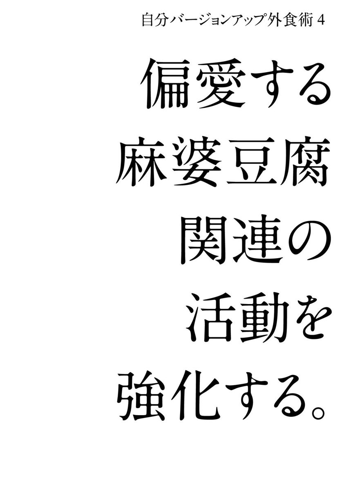

| 自分をバージョンアップする 外食の教科書 | |
| 本郷 義浩 | |
| (2016) | |
はじめに
一歩踏み出す勇気をもらえる
「外食のチカラ」
「『人間は、全員疲れているのだ』と仮定する。」という、僕が私淑しているコピーライター仲畑貴志さんの有名なコピーがありますが、日々働いていると、「ああ最近、ほんと疲れた。ちょっときついなあ」「あの人面倒くさいなあ。どこか遠くへ行かないかなあ」など、仕事が嫌になったり、人間関係が煮詰まったり、身体だけでなく心の「疲れ」を経験したことが誰しもあると思います。
そんなとき、ふらりと入った飲食店のおばちゃんが明るく元気で、
「兄ちゃん、ちょっと太り気味ちゃうか。肉ばっかり食べんと野菜も食べや」
「今日のイカめっちゃおいしいよ。ゲソサービスしとくわ」
「私ら、こう見えて人生しんどいことばっかりやけど、人前では泣いたことないで」
こんな言葉をかけられたら、少しは気分が楽になります。何気ない会話の奥の「人情」にふれて、心があったまります。元気な人から元気をもらえて疲れが癒されることがあります。
料理の先の人を味わうことができる。それこそが外食のチカラです。
あなたは、現状に満足していますか？ 自分を取り巻く環境（ヒト、コト、モノ）に満足していますか？ 満足しているなら、この本を読んでいただく必要はないでしょう。
前著『うまい店の選び方 魔法のルール39』（KADOKAWA）では、「いい店をどう選んで、どう常連になるか」を中心に書きましたが、本書では、「外食」をキーワードに、自分をバージョンアップし、仕事もプライベートも今より充実させるための具体的な方法を書いています。
僕はテレビ番組を25年以上作ってきました。ドキュメンタリー、歴史紀行、音楽、アート、ドラマ、バラエティー、料理情報など幅広いジャンルの番組を手掛けてきたおかげで、いわゆるプロフェッショナルに何百人と出会え、取材し、インタビューすることができました。
たとえば、世界的に有名な音楽家、芸術家、建築家、職人、人間国宝、三つ星シェフ、一部上場企業の社長、ベストセラー作家、売れている芸能人、気鋭のクリエイター、億万長者など、その道でかなりの成功をおさめている世間で言う「一流」の人たちばかりです。
彼ら彼女らと仕事上だけではなく、プライベートな会食も多々経験し、気づいたことがあります。
「一流の人は、外食をとても大切にしている」
言い換えれば、
「一流の人は、外食を武器としている」
ということです。一流の人たちは、意識的にしろ無意識的にしろ、
１ 旨い料理を食べると、身体だけでなく、心のエネルギーになる。
２ 食を通したコミュニケーションは、相手との心理的距離をぐっと縮められる。
３ 「行きつけの旨い店」を持っていることは、ステータスになる。
という３点に気づいているのです。
さきほど、僕はいろんなジャンルの番組を制作してきたと書きましたが、中でもライフワークのひとつが、料理情報番組です。25年にわたり、ゴールデンタイムの料理情報番組を１０００本以上作ってきました。
１万軒を超える飲食店、料理人、食に関わる人びと、そして食べ手側のいわゆる食通やグルメな富裕層に、話を聞いたり、密着取材したり、実際食べに行ったり、この25年でかなりの「外食経験」を積んできたつもりです。プライベートでも自腹で食べ歩く店は年間５００軒を超えていて、飲食店側と食べ手側、両方の立場から「外食」について考え続けてきた25年とも言えます。
ここ数年は、毎年１００回を超える食事会、食イベントを主宰しています。２人の会もあれば、４人、８人、20人、１００人、３００人規模の会もあり、５年間でのべ５０００人以上の人たちと食事をともにしてきました。
僕が「外食」を通して得た人的財産は、はかりしれません。
◆人生を学ぶべき一世代上の友人や感性を学ぶべき20歳以上年下の友人ができた。
◆一生の親友ができた。
◆異性の友人が多数できた。
◆大企業、中小企業を問わず、さまざまな業界の会社経営者の友人が多数できた。
◆医師、弁護士、税理士など実生活で頼りになる友人ができた。
◆小山薫堂さんや、堀江貴文さんらインフルエンサーと出会い、交流が生まれた。
このような強力な人的ネットワークを「プライベートな外食」を通して、構築することができたのです。
外食を通して利害関係のないところから始まった関係は、ときにゆるく、ときに強く......プライベートを大いに充実させる基盤となりました。
人間関係が楽しい。
そう思える日々をいま僕は送ることができています。
飲食店や、食事会、食のイベントが、会社、自宅以外の自分の居場所〝サードプレイス〟となってくれているのです。
さらには、外食を通して知り合った人たちから、
◆出版依頼が来た
最初の１冊『うまい店の選び方 魔法のルール39』も、食事会で交流を深めた編集者からの依頼がきっかけです。
◆原稿依頼が複数来るようになった
たとえば、『東京いい店うまい店』（文藝春秋）の２０１５～16年版へ「特別寄稿」８ページ分。
◆雑誌の連載依頼が来た
グルメ雑誌『あまから手帖』に「月間麻婆豆腐」というページを連載。
◆講演依頼がくるようになった
ビジネス勉強会、士業のクラブ、飲食業界、ホテル業界などから。
◆ラジオの出演依頼が来た
◆堀江貴文さんが作っているグルメアプリ『テリヤキ』のキュレーター、テリヤキスト就任依頼が来た
というように、本業のテレビ番組制作を続けながら、ここ数年パーソナルブランディングという点においても画期的とも言える進展がありました。
幸運は〝外食〟を媒介として人からやってくる。
これが、51歳の僕の実感です。
一食一食大切に。
オープンマインドで人と接して食事を共にしていたら、新しい面白いことがどんどん舞い込んでくる。
予期せぬ良いことが起こる。
論理的には飛躍していますが、これは真実です。
食事×人＝チャンス
あなたも「外食」を使い倒して、現状を打破し一歩前に進んで、毎日が面白い、楽しいと思える生活をしてみませんか？
自分をバージョンアップする 外食の教科書 目次
第３章 フェイスブックを使い倒して自分をバージョンアップするＳＮＳ外食術
第５章 後半生の自分をバージョンアップする50歳からの外食術
ビジネス書を読んでも、セミナーや異業種交流会に行っても、その内容を実践しなければ自分を変えることはできません。
本を読んだ直後やセミナーに出席した直後はテンション高くやる気がみなぎっていても、とかく日常に忙殺されて、いつのまにかモチベーションも下がり、行動に結びつかなかったという経験がありませんか？ 僕はあります。
その点、食事は毎日誰もが必ずする必要があるルーティーンです。このルーティーンを自分を変える武器にする。これこそがこの章の肝です。
食事の中でも家で食べるご飯は、自分の身体を作る日常食であり、家族との絆を作る生活の根本だと思います。
対して「外食」は、１人で食べる場合もありますし、誰かと一緒に食べることもありますが、そこに料理店があり、料理人がいて、サービスをする人がいます。
「外食」はコミュニケーションをともなう社会的な行為であり、自分と社会の接点のひとつでもあるわけです。
その「外食」を使って自分をバージョンアップできるポイントは、以下の３点だと僕は考えています。
１ 自分の性格の弱点を克服する。
２ 今まで、知らなかった世界の価値に目覚める。
３ 他人の生き方から人生を学んで実生活にいかす。
自分を変えるには、いつまでも同僚とばかり安酒を飲んで、愚痴を言い合っている暇はありません。ひとりコンビニ弁当を買って、テレビを見て、風呂に入って寝るだけでは、何も始まりません。
悪しき習慣から今すぐ抜け出して、「外食」を武器にしましょう。
「外食」でリスクをとって冒険してみる。自分をこぢんまりまとめているバリアを破り、一歩踏み出して、身近な秘境の扉を開けてみる。
僕は、これを「冒険外食術」と呼んでいます。
次のページから、冒険外食術の一端をご紹介します。
僕は、10歳の時、妹と父親を続けて病で亡くし、父親がいないことや兄弟がいないことを中学、高校時代はずっと引け目に感じていました。母は手描き友禅で生計をたて、必死に育ててくれましたが、当時の僕はあまり笑わず、
人前に出るのが苦手、引っ込み思案
初対面の人と話すのが苦手
目立つことが恥ずかしい
という社会性も社交性も乏しく、コミュニケーション能力も未熟のままでした。大学時代は東京で１人暮らし。今から思うと自分の殻に閉じこもり、狭い世界でシャイな４年間を過ごしたと思います。
就職しても、根本の性格は変わりません。なかなかテレビ局という職場に馴染めないまま、それでも必死に番組制作のスキルを身につけ、ＡＤからディレクターになりましたが、30歳を過ぎても相変わらず、
人前で話をするのが苦手
初対面の人とは話が１分ともたない
愛想がない
と自覚していました。
そんなある日、誰に言われたか忘れましたが、
「『敷居が高い店』ってよく言うけど、『敷居が高い』を店に使うのは、間違った使い方で......本来の使い方は家に使う......不義理をしている恩師の家とか、離婚しても知らせていない仲人の家に行くことを『敷居が高い』という」のだと耳にしました。
へえ、そうなのか......でも誤用されているにしても、そもそも「敷居が高い店」ってどういう店？と話が転びました。
「値段が高そうな店」
「怖い親父がいる店」
「京都の一見さんおことわりの店」
いくらとられるかわからない、アウェイ感満載で、どうふるまったらいいかわからない分不相応な店と結論づけましたが、そのとき突然思い立ったのです。
「銀座の鮨店に１人で行ってみよう」
料理情報番組を作っていて、銀座の鮨店に行ったことないでは話にならないという思いもありましたが、東京の鮨店にはある思い出がありました。
貧乏学生時代に体験した「東京の高級鮨店」
東京で家賃３万円のボロアパートに住んでいた学生時代（もう30年近く前ですが）は、アルバイトもさぼりがちで、とにかくお金がなくて、一袋66円のインスタントラーメンが強い味方でした。一袋を２回にわけて食べたこともあります。
学生食堂のカレーが１７０円。スタミナライスという麻婆豆腐のようなぴり辛の挽肉とつぶれた豆腐のあんかけ丼が２８０円でした。５００円のとんかつ定食はすごい御馳走。夜の飲み会も会費３０００円が上限でした。
そんなある日、僕の父親に若い頃、
「大変世話になったので恩返しがしたい」
という人から連絡がありました。僕の父は大学で教師をしていましたが、前述したように僕が10歳のときに40歳で他界していましたから、死後10年たってその人は、
「ようやく、仕事も安定したので、せめて息子さんに御馳走したい」
と思い至ったのだそうです。
連れて行ってもらったのは、東京都内の高級鮨店。場所も店名も覚えていないのですが、店内は白木のカウンターだけで、ネタを書いた木札が掲げられていて、きりっとした職人肌のご主人が目の前に立って握ってくれたことは覚えています。
当時は回転寿司店も少ない時代。鮨を食べる機会も少なく、まして目の前で握ってもらうなんて初めてでした。今でもその人に悪いことをしたなあと思うのですが、
「何でも頼んでいいよ」
ということだったので、後半はトロのにぎりを何度もおわかりしたのでした。ずいぶん高くついたことでしょう。トロ以外何を食べたか忘れてしまいましたが、貧乏学生の身にはそれはそれはおいしい魅惑的な体験でした。
そのとき思ったのです。
「こんな世界もあるのか。いつか自分で自腹で来られるようになってやろう」
東京の鮨店にはそんな思い出もあって、どうせなら超高級店が集まっている銀座の鮨店に１人で行ってみようと思い至ったのでした。
いくらとられるのか？
カードは使える？
注文のしかたは？
何を話したらいいの？
主人が怖かったらどうしよう。
不安でいっぱいです。
財布に10万円入れていったら大丈夫かな。10万もとられたら訴えてやる......。
虎穴に入らずんば虎児をえず、玄関の扉を開ける前に
「なるようになれ。恥はかきすて」
と、ぶつぶつ。大いに緊張しながら扉をあけて
「こんばんは......。予約しました本郷です」
と、５軒ほど経験を重ねたら、なんとなく「銀座の鮨店に１人で行く」という型ができてきました。
扉を開けると名前を告げて、どこに座るか、店の人の指示を仰ぐ。
まずはビールを注文して、ゆっくりと店を見回す。
「どうしますか？」
と聞かれたら、
「僕はかなり飲みますので最初はアテをください。あとでにぎり、おまかせでお願いします」
と言って、その人の目を見る。ビールのあとは冷酒を飲む。
やってはいけない３カ条も決めました。
１ 萎縮しない。
２ 知ったかぶりをしない。
３ 寿司店の符牒を使わない。
たとえば、むらさき（醤油）、しゃり（鮨飯）、あがり（お茶）、さび（わさび）、がり（しょうが）。
強面のご主人もいましたが、客商売です。普通にしていればぞんざいには扱われません。
「不安いっぱいの入店＆１時間過ごすうちに場慣れする」を５回経験すると、度胸がついたなあと実感できるようになりました。
いわゆる「敷居が高い店」に１人で乗り込んで、気持ちも折れず、大層ですが無事帰ってきたことが自信になり、大阪・北新地の鮨店にも平気で１人で行けるようになりました。
たった５回の「銀座の鮨店に一人で行く」冒険が、自分の弱いところ、一言で言えば、対人消極性傾向を克服するきっかけになったと思います。
銀座の鮨店はビールと日本酒を飲んでいる限り、いちばん高い店で３万５０００円くらいです。確かにいい値段ですが、自分をバージョンアップさせる投資としては安いと思いませんか。
また場になじんでくるとご主人と話しもできるようになります。
『すきやばし次郎』の小野二郎さんにはこんな質問をしました。
「鮨の修業で一番難しく、時間がかかるのは、どんな仕事ですか？」
「海苔ですね」
「え？ 海苔ですか」
「一人前になるには、10年かかりますよ」
その日に使う海苔を紀州備長炭で毎日30～40分かけてあぶるそうで、いかにむらなく均一に、しかも、焦げないようにあぶれるか。腕の差が大いに出るそうです。まさか、海苔をあぶる修業に10年かかるとは思いませんでしたが、一人で行くからこそ聞ける話もあり、銀座の高級鮨店の主人というプロフェッショナルと接することで度胸がついて、一皮むけるきっかけになると僕は思うのです。
京都の料亭「嵐山兆」を例にあげてみましょう。
夜の一番安い懐石コースが、一人前４万８６００円です。京都でも最高級の値段設定でしょう。富裕層は、さらに高いおまかせコース（６～７万円）を頼んで、芸妓、舞妓を呼んで高級ワインを飲んだり、目の前の大堰川で船を借りて花見や月見をしたり、平安貴族のような遊びができる料亭です。
嵐山という場所自体、川と山がすぐ目の前にせまり、自然をダイレクトに感じられる空間で、春は桜、夏は新緑、蝉の声、秋は紅葉、冬はみぞれに、時に雪。花鳥風月、雪月花という美意識を借景として取り込める地の利があります。「嵐山兆」の門前には水が打たれていて、必ず店の人が立っています。
「お待ちしておりました」
と声をかけられ、玄関までの少し長いアプローチを案内されます。玄関を入ると仲居さんに出迎えられ、靴を脱いで、廊下を歩き、座敷に通されると、すぐにふかふかのおしぼりとお茶が出されます。
席に着くまでの流れるような一連の時間もまた、非日常の体験です。屋根の形、天井のデザイン、光の入り方、床の質感、庭のしつらえ、すべてが落ち着いて場に馴染み、初訪問のときは逆にデザインの斬新さを感じました。
「兆」創業者、湯木貞一さんの茶の湯の美学の粋「侘び、寂び」と「和敬清寂」を、いまこの時代でも感じることができるのです。
手ぬぐい、箸、器、お椀、酒器すべてにわたり「４万８６００円」にふさわしい道具が揃えられています。床の間の掛け軸、花、花器も含めて、その作者や名前、価値がわからなくても、「何かすごい質感。いい感じ」と思えるだけで、刺激になります。
料理は、品書きを参照すれば、向付、煮物椀、造里、箸休、八寸、焼物、焚合、ご飯、水物......と続きますが、『嵐山兆』では、懐石料理のメインディッシュである煮物椀が出された時点で女将さんに「お味のおかげんはいかがですか？」と聞かれます。もし「ちょっと味が濃いです」というお客さんがいれば、そのあとの料理の味付けを変えてくれるのです。
懐石料理は、先人たちが食材を吟味し、季節を織り込め、組み合わせを考え、調理法を工夫し、その時代のニーズを満たし作り上げてきた叡智がつまっています。
京都の料亭は、空間そのものを五感で感じて、その懐石料理をいただきながら、どっぷり「和の美意識」にひたれるテーマパークなのです。
しつらえ、料理、道具、サービスもふくめて、「和の美意識」の基準を自分の中に新たに作ることができるのが、京都の料亭体験だと僕は思います。
本物にふれること。本物はそれまで知らなかった世界に目を開かせてくれ、自分をバージョンアップするきっかけを作ってくれます。それがある意味簡単にできるのが、京都の料亭なのです。
美意識を書き換えられる
本物の持つ力は、写真やコピーではわかり得ません。たとえば、ピカソ。美術の教科書に載っている抽象画を見て、この絵はすごい！と思ったことがありましたか？ 僕はありませんでした。皆目ピカソの良さがわかりませんでした。
ところが、ニューヨークの近代美術館に行ったとき、何気なく観たピカソの「アヴィニョンの娘たち」の前で、立ちつくしてしまったのです。衝撃でした。何かわからないけれど、強いエネルギーを感じ、画の前から離れられないのです。それまで写真や美術書で見てはいましたが、本物の持つパワーは違いました。
料亭は、基本座敷でいただきますが、割烹はカウンターに座るので、目の前で料理人が調理、盛りつけをするところを見ることができます。
京都の割烹でしたら、たとえば春は鯛の刺身をひくところ、夏はハモの骨切り、秋は松茸の炭火焼き、冬はズワイガニをさばくところを、見て音を聞いて香りをかいで、料理工程そのものを五感で体感できる良さがあります。
「飯田」という京都の割烹で、僕は初めて北大路魯山人作の汲み出し茶碗で薄茶をいただきました。
それまで魯山人の良さを恥ずかしながらよくわかっていなかったのですが、実物を使ってみて、口につけてみて感じる何かがありました。これも言葉では説明できません。魯山人作と聞いたから、パワーを感じたのかも知れませんし、高価なものを手にとって使ったということに無意識レベルで感動したのかも知れません。とにかく心がざわめき立ち、どこかにスイッチが入ったのです。
太陽と月を表した魯山人の有名な「日月椀」も実際手にして、ダシを飲んでみると感動します。日月椀は、木地に和紙を張りつけ、漆を塗り重ねて、砂子（金箔と銀箔を細かくしたもの）を蒔くというおそろしく手間のかかる技法で作られたお椀です。これまた写真や飾られているのを見るだけと実際使うのとでは全然違います。
京都の料亭、割烹で本物にふれ、「和の美意識」を学び、自分自身の美意識を書き換えることが、自分のバージョンアップにつながると僕は思います。
銀座の超高級鮨店や京都の料亭、割烹を体験し、殻を破り自分の中に新しい基準、物差しを作ることで、自分のバージョンアップにつなげる「冒険外食術」。次はワインです。ワインで誰もが知っている最高級と言えばロマネ・コンティでしょう。
生産年や状態にもよりますが、その市場価格は１本１００万円以上します。アマゾンでリサーチしてみると、２０１２年は１６８万円、２００２年はなんと２２４万６４００円でした。
「そんな最高級ワインを飲むことは一生ないだろう。自分には関係ない......」
と思いますか？ 僕はこう思いました。
「そんなにロマネ・コンティ、ロマネ・コンティ言うんだったら、ほんとにそんな値段の価値があるのか、一度飲んでみて、自分の評価をくだしてやろう」
かといって、１００万も２００万も出す気はありません。
そこで考えました。
長年、ロマネ・コンティの生産者ＤＲＣや輸入元と取引していて、親しいホテルのレストランは、仕入れ値が格段に安いことを聞いていたので、ホテルに勤務する知り合いのマスターソムリエに相談したのです。その結果企画できたのが、
「ホテルのメインダイニングで、ロマネ・コンティを10人で味わう会」
７５０mlのボトルですから、ロマネ・コンティは、だいたいひとり70mlは味わうことができます。会費はひとり10万円（消費税、サービス料込）。ロマネ・コンティの市場価格を考えると破格です。
開催したのは２０１４年10月27日。出席者は一部上場企業社長、飲食店経営者、食品関係会社社長、医師など、食通、ワイン通が集まりました。料理はフレンチのフルコース。シャンパンから始まって、ロマネ・コンティ以外のワインも数本でます。メインの肉料理のときに出されたロマネ・コンティは２００８年のものでした。
ソムリエの抜栓から、デキャンタージュにこれほど注目したことはないでしょう。
ハラハラドキドキ。なかなか味わえない期待感です。香りを味わって、いよいよ一口......。
味の感想はあえて書きません。でも他のワインも含めて、最高の味覚体験だったことは確かです。一食に10万円。これまた自分史上、一食にかけた最高金額でした。
ロマネ・コンティを飲んだ、一食に10万円かけたという体験によって、自分の中に何かエネルギーが生まれるのを感じました。
そのエネルギーは、正のエネルギーなのか負のエネルギーなのかは、わかりません。が、以下の３つの心理的変化がありました。
◆特別な会を企画、成功したことで自信が強化された。
◆自分の金銭感覚を超える体験をして、「せこさ」、「ケチくささ」から脱却できた。
◆ちまちま倹約するくらいなら、働いて収入を増やそうという考え方になった。
一食10万円かけることには一般的には賛否両論あるでしょうが、この本を手にとっていただいた方には、声を大にしていいたいと思います。普通のことをしていても自分は変われません。「外食」というチャンスを生かして、いろんな尖ったこと、珍しいこと、面白いことを企画するなり参加するなり体験することで自分をバージョンアップしようと考えることが大事だと僕は思います。
同じ干支の人とは、初対面でも何となく親近感がわくものです。周りを見渡しても「戌亥会」（戌年と亥年生まれの料理人グループ）とか「チキンクラブ」（酉年生まれの社長の交流会）など同じ干支で集まって勉強会や食事会を開催しているケースが多々ありますが、僕は辰年生まれなので、辰年生まれが世代を超えて集まる「龍結社～ドラゴンクラブ」という会を作っています。
僕が46歳のときに開いた第１回の会では、22歳～34歳～46歳～58歳～70歳と５世代集まりました。青年～壮年～中年～初老～老年と一堂に会したわけで、ある意味人生の縮図を見ているようでした。
そのとき気がついたのです。
ひとまわり年上の先輩は、自分の12年後の未来像だ。
僕は、この会をきっかけに12歳上の先輩達と食事に行くようになりました。
ひとまわり年上の先輩たちは、当たり前ですが、自分が生まれたときは12歳。18歳のときは30歳。28歳のときは40歳。48歳のときは還暦60歳になっています。
この12歳差というのが「ちょうどいい未来」の指標となり、よい点も悪い点も先輩たちから学ぶことが多く、自分の先々を考えるきっかけとなります。
自分が12年後、その先輩のようになっていたいのか、あるいは失礼ながらこうはなりたくないのか......。今僕は51歳なのでひとまわり上の人は63歳です。
◆サラリーマンだったＡさんは定年後、働かず無為に過ごしている（ように見える）。
◆同じくサラリーマンだったＢさんは定年後、夢だったバーのオーナーになり、バーテンダーに転身。イキイキとしている。
◆医師や士業の人は、仕事を続けていて、ずっと変わらない生活をしている。
◆食のイベントプロデュース会社の経営者Ｃさんはどんどん仕事が増えている。
◆本を出版したり、雑誌に連載したりしている人は楽しそうに見える。
というような12歳上の先輩たちの現状を知って、僕は、
「定年後は、ゆっくり海外旅行をしたり、趣味に興じたりして楽しく過ごす」
という考えを修正し、
「定年後も働く。そのために今から10年かけて準備をしよう」
と強く思うようになりました。
起業するか、誰かの会社を手伝うかは別にして、やりたいことが山ほどあるので、その中から本当にやりたいことが何なのかしっかり見極めたいと考えています。
僕が気づいた12歳年上で元気な人の共通点は、
◆外食が多い（２、３か月先に飲食店の予約をとっている）。
◆還暦を過ぎても牛肉料理が好き。
◆フェイスブックに料理の写真をアップしている。
自分の12年後といってもピンとこないものですが、ロールモデルとなる12歳上の人と、食事に行っていろいろ話しをすると、自分の将来を常に意識して、自分の近い未来を疑似体験することができるのです。
健康管理、仕事、考え方、遊び方......。人生の12年先輩から学ぶべきことは多いと僕は思います。
仕事をしていれば、失敗したり、つまずいたり、何をやってもうまくいかない状況に陥ったりすることもあるでしょう。あるいはプライベートでも家族とけんかした、友人とぎくしゃくした......など、気分が落ち込むことも多々あると思います。
そんなとき僕は自分が落ち込んでいることを誰にも知られたくないし、心配もかけたくありません。
そういうときこそ、ひとりで外食します。うまい料理を食べるだけで少しは気晴らしにもなるし、いつもと変わらない店の雰囲気の中で自分の位置を再確認してリセットもできます。
こういう落ち込んでいるときの「ひとりご飯」は、「おひとり様ネガティブクルージング」と名付けて、半ばイベント化しています。
逆に、仕事が順調なときにふと「ひとりご飯」の機会があったときや、あえてひとりで人生の作戦を練ったり、考えごとをしたりしたいときは「おひとり様ポジティブクルージング」と名付けて、思い切り「ひとりご飯」を楽しんでいます。
「ひとりご飯」は友達や恋人がいないみたいで恥ずかしい、寂しい人と思われるのでは......と思う気持ちもよくわかります。
確かにクリスマスイブや、バレンタインデーにカップルいっぱいの店にひとりで行く気にはなりません。でも「ひとりご飯」は、「ひとりご飯」でしか味わえない良さと楽しさがあります。ひとりで街へ出かけるだけでも変化のない日々の中でのちょっとした冒険となり、刺激的で学びがあるものです。
「ひとりご飯」のメリットをズバリあげてみましょう。
◆自分の食べたいものを食べられる。
◆自分のペースでお酒を飲める。
◆会話に邪魔されず、考える時間を作れる。
◆店の人と話せる。
◆他の客と話せる。
ひとりでの外食は、注文だけすれば誰とも話さないでおこうと思えば可能ですし、逆に店の人と会話を楽しむこともできます。
僕の「おひとり様クルージング」を具体的にご紹介しましょう。
おひとり様ネガティブクルージング
◆１軒目 「お好み焼き店Ｄ」
会社と自宅の動線上にあって、カウンター８席、ご夫婦で営む店。
１品目、豆腐の鉄板焼き。おろしニンニク入りのポン酢で。
２品目、豚肉のステーキ、ガーリックチップのせ。
３品目、超激辛豚キムチ焼きそば。
その間、酎ハイレモンを３、４杯飲みますが、会話は注文のときだけ。ニンニクと激辛味の刺激、やがて満腹感、さらには酔いでなんとなく少しだけ気持ちが緩みます。実はもう２００回以上通っている店ですが、いつ行こうとも変わらず、
「いらっしゃい」
とにっこり出迎えてくれます。自分のペースで食べて飲んで、いい意味で放っておいてもらえる「場」は、会社と家以外の〝サードプレイス〟です。
落ち込んでいるときは、お酒を飲める人は飲んで、酔うという「逃避」を気の置けない店でする。弱い自分にひとりで浸れる場所を持つ。そんなお店は人生の大きな武器になってくれるのです。
◆２軒目 「ワインバーＬ」
お好み焼き店よりさらに家に近いところにある店で、ソムリエールがひとりカウンターに立っています。カウンター８席。テーブル席もあります。僕は白ワインのシャルドネが好きなので、グラスで頼みます。ソムリエールはかわいい感じですが気が強く、しゃきっとしています。
「本郷さん、何かあったんですか。元気ないですね」
とは言われますが、
「いやいや別に......」
と落ち込んでいる理由を話すでもなく、ただ一緒の空間にいて僕はワインを飲むだけです。客の入りは日によってバラバラ、夜９時頃で僕だけの日もあります。心の中で「ソムリエール、ひとりで毎日よく頑張っているなあ」とリスペクトしたり、「この白ワインうまいなあ」と思ったり。ただそんな時間を過ごしているうちに、少し気が楽になります。
白ワインをグラスで２～３杯飲んで、もう１軒スナックに行くこともありますし、お腹が空いていれば、「餃子の王将」で餃子を食べたり、「天下一品」でこってりラーメンを食べたり、立ち食い蕎麦店で月見うどんを食べたり、満腹感を伴って家に帰ります。大概がすぐに眠ってしまいます。
１軒目のお好み焼き店も２軒目のバーも、人の温度を感じながら、リラックスして食べたり、飲んだりして時間を過ごすことで気持ちが整理できたり、気分が和らいだり、頭を冷やしたりできるのです。
落ち込んでいる理由の根本的な解決にはならないですが、しばし「現実逃避」して、時間ぐすりを処方してくれるのが「おひとり様ネガティブクルージング」なのです。
クッションとなってくれる店があるとないとでは、人生、ぜんぜん違うと僕は思います。
おひとり様ポジティブクルージング
逆に仕事やプライベートがうまくいっている、とてもいいことがあった......などのポジティブなときは、どこへ行っても楽しいものですが、自分ひとりの時間を過ごすことで、元気な自分との対話を楽しむことができます。
◆１軒目 「オーセンティックバーＴ」
街場のバーは内装、バックバー、カクテルの作り方、所作、すべてにバーテンダーの美学が色濃く表れるので、その美学を味わう面白さがあります。
最近「坐辺師友」という北大路魯山人の言葉を知りました。自分の坐っている周りにいる人、あるモノ、デキゴト、すべてが師であり友であると僕は解釈していますが、バーに行くときは特にそう思って行くことにしています。
「おひとり様ポジティブクルージング」の１軒目として僕がよくいくのは会社と家の動線から少しはずれた場所にあるカウンター８席のバーＴです。マスターは僕と同い年。１杯目はモスコミュール。カクテルの名前の由来や、ちょっとしたつまみの作り方、マスターの旅行体験などを聞きながら、２杯目は、季節のフルーツを使ったカクテルを飲みます。ご飯を食べる前に飲むいわゆる「前飲み」です。
「さて、今夜はどこで何を食べようか」
遠足の前の日、あるいは旅行計画中のわくわく感があります。ポジティブな気分も増長され、
「楽しいなあ」
と実感できる時間となります。もちろん仲間とワイワイ騒ぐのも楽しいですが、ひとりで「気分がいい」「うれしい」などのポジティブな感情をゆっくり味わうことができるのがオーセンティックなバーでの「前飲み」だと僕は思います。
２、３杯お酒を飲むと、さっと店を出ます。最大滞在時間30分です。
ちょうど気持ちよいほろ酔い加減で次の店へ。
◆２軒目「中華料理店Ｚ」
◆３軒目「中華料理店Ｇ」
２軒目は北新地へ移動します。３軒目に行くのも中華料理店ですが、順不同、どちらも人気店なので、満席ならもう１軒のほうへ。どちらも満席なら、さらに違う中華料理店に行きます。要は麻婆豆腐を食べに行くのです。しかもハシゴします。
辛さはエンターテインメント
激辛の麻婆豆腐を食べたら、舌も、喉も痛くなりますし、熱くなります。
でも、後を引きます。フーフー良いながら、もう一口......。
「口から火がでるわ。ひえ～」
と言いながら、ご飯に載せて、もう一口......。舌はしびれ、それはそれは辛いけれどまた食べたくなります。そもそも、辛い料理はどうしてまた食べたくなるのでしょうか。
一般的に「五味」と言われるのは、「甘味」「塩味」「酸味」「苦味」「旨味」の５つで、「辛み」は、入っていません。「辛み」は実は舌の味蕾で感じるのではなく、舌や口内、喉の粘膜を通して、三叉神経、痛覚で痛みや熱さという「刺激」として直接感じるものなのだそうです。「痛み」と「辛み」は、似たような感覚と言えます。
三叉神経を通して辛みを感じると、しばらくすると気持ちよくなってきます。強い刺激をもたらす辛みに対して脳は鎮痛剤としてβ‐エンドルフィンという脳内快楽物質を分泌させるのです。
たとえば向こう脛を打ったときも火傷をしたときも分泌されます。このβ‐エンドルフィンが痛みや熱さを和らげたあと副作用として、至福感や陶酔感ももたらしてくれるのです。結果として辛み（痛み）→鎮痛→快感という回路ができあがり、辛い料理をまた食べたくなるのは、この回路を再現したくなるからだそうです。
激辛→β‐エンドルフィン→快感
これが、「辛さはエンターテインメント」であるという理由です。
「おひとり様ポジティブクルージング」のクライマックスはこのβ--エンドルフィンを何度も出す麻婆豆腐のハシゴ作戦なのです。ほろ酔いも加わって、ほんとに上機嫌な夜を演出できます。
他にも、無口な老夫婦が営む「カウンター天ぷら」→「モヒート専門のバー」や、「魚のうまい上等居酒屋」→「美人ママのいるスナック」というルートもあり、「おひとり様」を積極的に楽しんでいます。
悲しいときも辛いときも、楽しいときもうれしいときも、自分の感情を受けとめてくれる「外食」のルートを意識していくつか作る。必ずあなたの人生を盛り上げ、サポートしてくれると僕は思います。
僕が一番好きな時代小説家は、池波正太郎氏です。『鬼平犯科帳』や『仕掛人・藤枝梅安』『剣客商売』などの設定の巧みさ、ストーリーの面白さや、独特な文体に惹かれているのですが、池波正太郎氏の食への造詣の深さ、情熱のかけ方も魅力のひとつです。
「私が自分の時代小説の中へ、しばしば、食べものを出すのは、むかしの日本の季節感を出したかったからにほかならない。季節の移り変わりが、人びとの生活や言動、または事件に、物語に影響してくる態（さま）を描きたいのだ。」（『食卓のつぶやき』）
『鬼平犯科帳』には、火付盗賊改方長官、長谷川平蔵の好む「うまい店」が何軒も出てきます。たとえば、軍鶏鍋の「五鉄」。川海老の塩焼きや穂紫蘇の吸い物が出てくる料理茶屋「万屋」。一本饂飩の「豊島屋」。部下たちや、密偵たちと杯を交わしながら、軍鶏鍋をつつくシーンは、なんともおいしそうで、楽しそうです。
『銀座日記』などのエッセイには、池波正太郎氏の外食記録や自宅での夜食、朝ご飯などが詳細に書かれています。鮨や天ぷら、蕎麦、洋食など池波正太郎氏自身の「うまい店」が何軒もでてきます。
新しくできた店で牛肉の網焼きを食べたら、ご飯を３杯もおかわりしてしまったとか、銀座の洋食店でテイクアウトしたロースカツレツを翌日、カツ丼にして食べたり、ソースで煮たりとか。読むたびに食べたくなるものばかりで、食べたものの記録だけでも池波正太郎氏の趣味嗜好がわかって面白いなあと思ったのが、僕も食日記をつけようと思ったきっかけです。
食日記といっても僕の場合は、パソコン上の月間スケジュール帳（エクセルで制作）に外食した店名と自宅での食事の場合はメインの料理を書くだけです。あまり詳しく書くことにすると、面倒くさくなって続かないと直感したので、できるだけ簡略化しました。
この食日記、シンプルではありますが、あとで見返すといろいろな発見があり、面白いことに気がつきました。２００５年元日からスタートしたのでもう10年を超えていて、年始にちょっと一杯飲みながら前年行った軒数を数えたり、読み取れることはないか考えたり、振り返るのも恒例となりました。たとえば２０１５年の１年間に、飲食店に行った軒数は、のべ５２５軒でした。その２０１５年の「自分の食の傾向」と感想です。
◆麻婆豆腐を食べた回数は、１１３回。
目標は、毎年１００食なので達成。よく食べた......。
◆昼ご飯は、圧倒的に炭水化物。
ラーメン、うどん、カツカレーの順。メタボになるのは当たり前だ。
◆飲んだ後に、食べるのは月見うどんが多い。
かつお昆布だしに天かすが浮いて、卵黄がとけている状態が好き。
そういえば海外から帰ってきても食べたくなるのは月見うどん。
◆大きな仕事をやり終えた直後は、鮨を食べに行く傾向がある。
皆で行くのは焼き肉。少人数では鮨。
◆５２５軒のうち、初訪問だった店は、地方もあわせて１９２軒。
残りは、行きつけの店に複数回通っていることになる。
◆晩ご飯で、同じ店に一番多く行った回数は、15回。
その次は、10回、９回。だいたい、僕の、行きつけの店は70軒くらいある。
という風に、食に関する自分の嗜好、行動がわかります。
食事は、生活に直結し、基本的には、３６５日毎日することですし、ただ行った店、家で食べたものを簡単に書くだけで一番簡単な行動記録、ライフログになります。食日記をみかえしてみると必ずいろんな発見があります。自分の食日記を通して、案外自分のことをわかっていなかったと気づくだけでも価値はあると思いますし、食生活を見直すきっかけにもなり、僕の場合は、仕事に生かすこともできています。
たとえば「大きい仕事が終わったあとは、鮨を食べに行く傾向がある」と、気がつきましたが、その直前の１週間の食事を見てみると、テイクアウトの弁当が続いたり、昼を抜いたり、禁酒したりしていて、なかなかのハードスケジュールです。「めちゃめちゃプレッシャーを感じる。やり遂げることができるだろうか......」というような不安いっぱいの心理状況も思い出しました。
食の記憶
↓
前後の生活、行動を思い出す
↓
そのときの気分、心理状況を思い出す
この記憶の呼び覚ましは次の大きな仕事をするときに大いに役立つのです。「あのときはつらかったなあ。でも必死になってなんとかやりきった。乗り越えることができた......。一度できたのだから今回もきっとできるだろう。うまくいくだろう。自分を信じよう」という前向きな気持ちの根拠となりえるからです。
自分の過去の成功体験のプロセスを反芻し、次にのぞむ心の準備を調える。
たった一か月前の行動や気分も忘れがちで、きっかけがないと思い出せませんが、簡単な食日記が、過去を見直し、大層ではありますが、自分を見つめ、未来を切り拓くきっかけとなってくれるのです。
これを食べれば元気になれる。これを食べたら前向きになれる。自分の身体と心を満たしてくれる食べもの。そんな料理を僕は「ラッキーフード」と呼んで３つ決めています。
◆「赤坂四川飯店」の陳建一さんが作る麻婆豆腐
◆「ラーメン熊きち」（大阪吹田市千里丘）のみそ味チャンポンキムチトッピング
◆「どんどん亭」（大阪北区中崎町）の本辛焼きそば
陳建一さんは、今でもほぼ毎日、「赤坂四川飯店」の厨房に立っておられるので、運が良ければ陳さん自身が作った麻婆豆腐を食べることができます。僕が陳建一さんの知己を得たのは、プライベートな食事会でした。その後何度かお会いするうちに、「赤坂四川飯店」の厨房に入れていただく機会がありました。事前にお願いすれば、誰でも厨房を見学することができます。
僕は麻婆豆腐研究家を名乗り、前述したように年間１００食を超える麻婆豆腐を食べていますが、現時点の生涯一は、「『赤坂四川飯店』の厨房で食べた陳建一さんの麻婆豆腐」です。面白くてホスピタリティー溢れる陳さん自身に感情移入が十分できていたこと。炎の前で温度を感じ、鍋の音を聞き、香辛料の香りを浴びていたので、五感が活性化していたこと。盛りつけて３秒、超熱々を陳さんと一緒に食べられたこと。いろんな幸運が重なり、「生涯一の味」となったのでした。
陳建一さんの父で、麻婆豆腐を日本に紹介し、中国料理の神様と呼ばれた陳建民さんの著書『中国料理技術入門』に、麻婆豆腐の特徴は、「麻（マ＝サンショウの味）辣（ラ＝辛い）、燙（タン＝熱い）、酥（スゥ＝香ばしい）、嫩（ネン＝やわらかい）にある。」と書かれています。酥は、挽肉を炒めたときに出る香ばしい香り。嫩とは、豆腐の柔らかさのこと。陳建一さんの麻婆豆腐は、その５つの特徴が際立っていて、激辛だけど滑らか。油までおいしく感じられたのでした。
「料理人にとって一番大切なことは何ですか？」
と聞いてみたら陳さんの答えは
「自分自身が幸せであること。暗い気持ちで作った料理は絶対おいしくないよ。気持ちを込めて、毎日料理を作り続けるためには、日常生活が楽しくて幸せでないとね」
「辛」という字に建一の「一」を足したら「幸」という字になります。陳建一さんの麻婆豆腐には、麻辣燙酥嫩に加えて、「幸せ」というスパイスが入っていて、そのことを知ると余計に麻婆豆腐が美味しく感じられて元気も出るのです。
「ラーメン熊きち」は、10数年前は職場から近かったので、毎週月曜日に数年通いました。「みそ味チャンポン」は、にんにくがガッツリきいた味噌味スープに自家製極太麺。キムチとおろしニンニクをトッピングしたとにかく濃厚なラーメンです。今では職場が少し離れたので年に数回しか食べられませんが、大きな仕事の前に景気づけに食べることにしています。
「どんどん亭」ももう20年以上通っている店で、僕の好きな具、豚ロース、キムチ、刻みニンニク、キャベツを倍量入れて、激辛ソースを絡めた「本辛焼きそば」が３つめのラッキーフードです。
メニュー名は「本当に辛い焼きそば」と「本Ｐが好きな辛い焼きそば」の２つがかけられています。こちらは今の職場に近いので、行こうと思えばいつでもいける地の利もあり、先ほど、「おひとり様ネガティブクルージング」で紹介した店でもあります。落ち込んでいるときにこそ食べて元気になれるメニューです。
この３つの料理の共通点は、
・味が濃厚
・ニンニクがきいている
・ハイカロリー
多少気分がへこんでいるときも、まずは身体が元気になったと感じること。そうすると気持ちも少しは元気になれるのです。
医学の世界ではプラシーボ効果という言葉があります。偽薬でも、薬と思って飲んだ人には効くことがあるそうで、自分でこれを食べれば元気になれる、運気が良くなると思い込むこと。決めたもん勝ちだと僕は思います。
そしてこの３つのメニューにもう一つ共通点があるのは、それぞれに思い出があることです。
何か思い出がある×料理としてのパワー
これぞラッキーフード決定の肝なのです。
ラッキーフードは自分で決める。必ずあなたの味方となってくれることでしょう。
ＣＯＬＵＭＮ 有名人の外食術！
小山薫堂さんの「偏愛外食術」
「隔週ペースで京都に来ておりますので、一度、飲みに行きませんか？」
小山薫堂さんからこんなメールをいただいたのは、２０１２年10月８日のことでした。京都の割烹で偶然、隣り合わせとなり、その後フェイスブック上で「友達」になっていたのですが、あとで伺ったら、薫堂さんの友人を僕がサポートすることがあって、そのお礼がてら、もう一度会ってみようと思っていただいたそうです。
そのメールをきっかけに連れて行っていただいたのは、開店以来30数年、テレビにも雑誌にも１度も出たことがない、完全取材拒否の隠れ家洋食店でした。
「注文、まかせていただいていいですか？ 僕は、あれもこれも食べたいたちなんで、少しずつたのみますね」
カウンター席でとびきりうまいワインを飲みながら、ホッキ貝のブルギニョンバター、蕪のポタージュに冷製コンソメジュレを浮かべたスープ、ポテトサラダ、薄切りフィレステーキひと切れ、ミンチカツ２人で１個、鮑の薄切りステーキ、ミニカレーライス、ハンバーグとゆで卵をあわせたサンドイッチ、など小さいポーションで10品以上。
「いやあ、僕は洋食が大好きで。ここが京都でいちばん好きな店なんです」
次何が出てくるかなという期待感、懐かしい味、初めての味......。まさにあれもこれも、薫堂さんの「食」に対するリスペクトが大いに感じられる、ワクワク楽しい食事会でした。メニュー表を見るときの少年のようなまなざし。僕が
「めちゃくちゃおいしいですね」
と感想を言ったときのうれしそうな顔。一晩で薫堂さんの「食に対する情熱」のファンになったのでした。
薫堂さんは、この店のように隠れ家的で、自分だけのオーダーができたり、裏メニューを楽しめたりする店を全国に何軒も持っていて、まさに外食の達人です。
「これだと思った店には何回も通います。ご主人や女将さんと気心が知れると、僕の好みもわかってもらえていろいろワガママも聞いてもらえるようになるんです」
何度かお会いして話して、薫堂さんの「食に対する情熱」の根本には、「偏愛」があることに気がつきました。
「食に関してもマイブームっていうのがあって......」
薫堂さんは、洋食という広いカテゴリーよりもっとコアな単品料理や食材を突然、
「とりつかれたように好きになる、気になってしかたがなくなる」
ことがときどきあるそうです。たとえばナポリタン、とろろ昆布、胡麻、グリーンスムージー、コッペパンなどで、いちばん最近は、レモンだそうです。
長崎佐世保に数軒おいている「レモンステーキ」、京都の中華料理店の「レモンチャーハン」、東京のとあるイタリア料理店の裏メニュー「レモンパスタ」など日本全国のレモンメニューを探して食べ歩く......。手土産もレモンを使ったスイーツを選ぶようになる......。スーパーマーケットでもレモン関連商品を探す、買う......。
マイブーム＝偏愛が、行動エネルギーを生み、行動半径を広げ、新しい店、新しい料理に出会うきっかけを作り、食生活をより充実したものにしているのです。何かに夢中になっている人はとても魅力的に見えることがよくありますが、薫堂さんの食に対する偏愛ぶりに他人がふれるとき、薫堂さん自身に実はぐいぐいと惹きつけられていくのです。薫堂さんの「偏愛外食術」は、実は、「モテる外食術」ともなっているのでした。
僕は、「麻婆豆腐」を偏愛しています。先述したように麻婆豆腐研究家を名乗り、年間１００食以上麻婆豆腐を食べていますが、少なくとも、麻婆豆腐好きの人たちが、どんどん周りに集まってきてくれるようになりました。
「偏愛外食術」は、共感を生み、人を惹きつける力を作ってくれると僕は思います。
僕は、会社に入って約30年になります。10年スパンで自分の仕事人生を考えてみると、新入社員時から10年間は修業時代で、いわゆるＡＤ（アシスタントディレクター）から駆け出しの取材ディレクターへ。取材ディレクターとはチーフディレクターの下についていろいろ学び、ロケに行って５分とか10分という短いＶＴＲを作る仕事です。
30代の10年は、その取材ディレクターから番組１本を仕切るチーフディレクターへ。自分のチームを持ってスタジオ演出もやります。
40代は、チーフディレクターから新番組の企画、予算の管理、出演者のキャスティングなど番組全体の最終責任を担うプロデューサーに。
普通の会社にあてはめてざっくり言うと、20代は修業、30代は第一線、40代はチームリーダーというタイムラインではないでしょうか。
今回この本を書くにあたり、外食というテーマをもって改めて振り返ってみると、自分ができていたかどうかは別として、51歳の今だから言える修業時代、そしてリーダーとしての外食術があることに気がつきました。
もちろん個人差や業界によっての偏差はあると思いますが、修業時代は、伝票や文書の書き方から始まって、業界用語の学習、社会人としての心構えを学び、営業なら営業、企画なら企画のノウハウとスキルを自分のものとし、ひとり立ちするための準備期間で、ある程度のオン・ザ・ジョブトレーニングと現場経験が必要だと思います。
テレビ番組の制作現場でいえば、入社するとアシスタントディレクターいわゆるＡＤとして番組につき、数年間、自分の時間はほとんどなく、コピーとりから弁当の手配、先輩の使いっぱしりなど山のような雑用を通して番組作りの基礎を学びます。その後ディレクターに昇格し、短いＶＴＲを作ったり、短いコーナーを担当したりして腕を磨いていきます。
次のステップは番組全体の構成を考え、ディレクターたちを束ね、総合的に演出をするチーフディレクターで、昇格するまでにはやはり、入社から最低でも10年はかかります。
その修業時代に何が大切でしょうか。すべての業界にあてはまると思うのは、
優秀な先輩から学ぶ。
社内人脈をつくる。
修業時代は、この２点のために食事もシフトすべきだと僕は自戒もこめて思います。
昼ご飯はもちろん、夜も
「お疲れさん。ちょっと一杯いくか」
と帰り際に上司や先輩から誘われれば、必ず同行できるようにプライベートなスケジュールを入れておかないことが大切です。どうでもよい先輩から誘われた場合は、きっぱり断ってもいいと僕は思いますが、優秀な先輩から誘われて、
「すみません。先約が......」
では、あらゆる意味でチャンスを逃します。
上司の立場で考えれば、
「飯でも食いながら落ち着いてちょっと深い話をしたい」
と思うことも多々あるわけで、業務優先の仕事場ではなかなかする余裕のない、ためになる話をしてもらえる可能性が高いのです。
逆にその人が仕事ができるかどうかは、２人でご飯を食べに行くときにどんな店に連れて行ってくれるかで一発で見抜けます。
もちろん激安居酒屋チェーン店にもいい店はあるとは思いますが、大事な部下とのせっかくのサシメシでそんな選択をする上司は仕事もできないと僕は思います。
仕事ができる人はちょっといい店を必ず知っていて、そこに連れて行ってくれます。庶民的な店でも、店の人が元気で愛想がよくポテトサラダがおいしいとか、20年来通っていて、自分だけの裏メニューがあるとか、ゆっくり話をできる席があるとか、その店に行く理由が何かしらあるはずです。
高級店でもただ料理がおいしいだけではなく、ご主人の話が面白くて勉強になるとか、店の作りがやたらにカッコイイとか。自分の世界を持っている人は店選びにも手を抜かないのです。
つまり、上司や先輩の行きつけの店に連れて行ってもらったあなたが学ぶべきなのは......
そこはどんな店で、先輩はその店の何を気に入っているのか？
先輩は何を食べてどんなお酒の飲み方をするのか？
店の人との接し方は？ 話し方は？
お金の払い方は？
ずばり、先輩の食事の流儀です。食に対する価値観です。そこには、必ず学ぶべきものがあります。特に学生から社会人になりたての20代は、社会勉強が圧倒的に不足しています。先輩が飲食店とどう関わっているかを通して、大げさなようですが社会との接し方も学ぶことができますし、逆に上司の器もはかることができます。
仕事ができる人は、食事を大切にしている。
食に淡白な人は、仕事も淡白。
店の人に対する接し方が横柄な人は人物が小さい。
お金を払うときにいちいち明細を確認する人はクリエイターではない。
これは、主観と言えば主観ですが、僕が30年仕事をしてきて気がついた法則です。そして食事の流儀を学びながら、ある程度深い話ができて、
優秀な先輩は他の人とどこが違うのか。
陰でどんな努力や勉強をしているのか。
など仕事ができる理由を学ぶことができれば、これほど得することはありません。
料理業界には、
「修業を始めて10年で芽が出ない奴は一生芽が出ない」
という言葉があります。
一般企業でも、30歳過ぎが勝負どころでしょう。
その30歳過ぎまでに自分のスキルアップに打ち込むことはもちろん、積極的に社内の人とご飯を食べに行き学べるところは学び、社内人脈を構築していく。そのためにはプライベートな時間も仕事に捧げるべきだと僕は思います。
10数年前、僕がプロデューサーになる直前、先輩プロデューサー（プロジェクトリーダー、以下Ｐ）に質問をしたことがあります。
「Ｐの仕事では何が大切ですか？」
「それはいろいろあるよ。予算管理はもちろん、参加スタッフの選抜、プロジェクトの方向づけ、具体的なビジョンを示して内容をつめていく、クオリティー管理......」
先輩は続けました。
「まあ何だかんだ言っても、いかに『気持ちのいい打ち上げ』をできるかどうかだよ、Ｐは」
「なるほど。僕は宴会好きなので、それは得意分野です」
そのときは、その真意がよくわかっていなかったのでした。テレビの現場では、年に何回も「句切り」のタイミングがあります。
２～３か月かけて制作する単発番組では放送終了後。週１回放送のレギュラー番組では、９月や３月の期末、あるいは年末。番組関連イベントもたくさんあってその終了後。一般の会社でも、自分の部署が成果を上げた、新規プロジェクトがひと段落した、など仕事の節目節目は年に何回かあると思います。
そういった句切りにする打ち上げは、ディレクター時代は、何も考えず自分も楽しみ、わいわい騒いでいるだけでしたが、チーム全体の責任を担うプロデューサーになり、主催者になってはじめて気がついた「打ち上げの意味と効果」があったのです。
打ち上げは、次の戦いへの決起集会である
逆にいうと、「打ち上げ」を開けるような状況ではない場合もあります。
何か大きなトラブルがあった。
あまりにも結果が悪かった。
スタッフ同士のムードが良くない。
こういう場合、プロジェクトリーダーは打ち上げを開く気にもならないでしょう。
「打ち上げ」を開けるということは、そういったネガティブな要素がないから開けるわけでプロジェクトが一定の成功をおさめたという証しでもあります。先輩プロデューサーの、「気持ちのいい打ち上げをできるかどうかだ」の真意とは、良いプロセスを経て、良い結果を出さないと本当に気持ちのいい打ち上げはできませんよ、そして逆に、うまくいったなら、みんなの苦労に報いるための打ち上げをちゃんと開きなさい。それがＰの甲斐性だよ......という意味だったのでした。
打ち上げは心をリセットして、新しい期や次のステップへすすむための「竹でいうと節」「文章でいうと句読点」みたいなものなのです。
さらにもう一歩突っ込んで「気持ちのいい打ち上げ」の要素を考えてみると......。
◆各々が互いの健闘をたたえあい、プロフェッショナル度を認め合う場となる。
◆参加者同士の心理的距離を縮める場となる。
◆「次の仕事もがんばるぞ」とモチベーションを上げる場となる。
承認→共感→次への意欲
この流れを作ることができると「気持ちのいい打ち上げ」となるのです。
考えてみたら僕はもう１００回以上打ち上げを経験していますが、「気持ちのいい打ち上げ」に一番ふさわしい会場設定には、ずばり結論があります。
打ち上げは焼き肉に限る。
ハードな仕事を一緒にしてきて、ひと区切りがついたら一緒に肉を食べる。ことのほか、焼き肉は盛り上がります。
生ビールで乾杯。たとえば焼き網に骨付きカルビを載せます。脂がおちて炎が上がります。焼き加減を見ていい頃合いでにんにくがたっぷり入った濃い味のタレにからめてかぶりつきます。ハラミはたっぷりのタレを絡めてご飯の上へ。
タンパク質や脂肪もたっぷりの牛肉は自然とテンションが上がる食材ですし、仲間といっしょに火を見ながら自分たちで焼いて一緒に食べるという行為は、狩猟民族さながら収獲祭、祝祭的なイメージも増幅し、心地よい酔いと満腹感で前向きになれ、次もがんばろうという気運も仲間意識も高まるのです。
そんな席で、リーダーがしてはいけないことがあります。それは、メンバーにダメ出しをすること。
これは、あらゆる宴会、酒席でもやってはいけないことだと思っています。
部下を叱ったり指導するなら、ご飯の席でも、仕事場でも一対一でするべきだと思っています。打ち上げの席でリーダーがすべきこととは、逆に「ほめる」ことです。
僕の友人に「日本ほめる達人協会」の理事長、ほめ達！こと西村貴好さんがいます。人気経営コンサルタントとして年間講演数は２００回以上をこなしています。
西村さんは、ほめて人を育てる達人です。上司が部下をほめる。店長が店員をほめる。親が子をほめる。先生が生徒をほめる。ただお世辞やおべんちゃらを言うのではなく、心の底から相手の良さを見いだし、あらゆるものから価値を発見してほめる。裏を返せば、相手をほめることができるのは、相手のことを理解し、きちんと見ている証しでもあるのです。
あなたは、部下をほめるのが得意ですか？
チームメンバーが手柄を立てたり、プロジェクトを成功させたり、企画書がよくできていたり、もっとささいなことで言うと、コピーのとり方がうまかったり、電話の応対の仕方がうまかったりしたとき、ちゃんとほめていますか。
僕が、西村さんから教えてもらったのは、まず、ほめる言葉、最初のきっかけの一言を身につけること。それは、
すごい
さすが
素晴らしい
の３語です。ほめるときは、まずこの３語のどれかを発して、そのあと具体的な理由をいう。それがほめるタイミングを逃さないコツなのです。僕もそうですが、いざとなると、口ごもってなかなかほめられないものです。まず、最初の一言を言いながらほめる中身を考える。これを打ち上げの席、焼き肉を食べながら実践すると、メンバーのモチベーションは驚くほど上がります。たとえば......。
「すごい！ 君はＶＴＲを作る才能があるね。あのファーストカットはセンスを感じたよ」
「さすが！ あのプレゼンテーション冒頭からよかった。キャッチコピーでぐーんと相手の心をつかめたね。あれだけ企画書書き直して苦労した甲斐があったな」
「素晴らしい！ 君の後輩に対するフォローは見事だった。彼も随分勉強になったと思う」
とにかく、最初の一語を発して、その間にちょっと言葉を選んで、具体的にほめる。ぜひ試してみてください。
叱るのは一対一で、ほめるときは皆の前で。
仕事ができるメンバーほどリーダーに対して自己承認要求があり、人前で恥はかきたくないと考えていると僕は思います。
あまり親しくない部下や、新しくチームを組むことになったメンバーを誘ってじっくり話をしたいときは、僕なら鮨店や割烹、イタリアン、中華料理店でもカウンターがある店に行きます。カウンターで横に並ぶと距離は近いですが、あまり視線が合わないので部下にとっても自分にとっても物理的にも精神的にも楽なのです。では、僕がじっくり話す目的は何でしょうか。
部下がどんな人間か本質を見極めるためです。
カウンターに座って、少し落ち着いて、お酒が入るとだんだん本性がでます。１時間も話していると、だいたいわかってきます。では、ダメな部下のサインをズバリあげてみましょう。
愚痴を言う。
現状を嘆く。
他人の悪口を言う。
こういう部下に出会ったら、ここからが上司の出番です。僕は、はっきりダメ出しをします。
「いっぺん、愚痴を言ったり、現状を嘆いたり、他人の悪口を言うことをやめてみたら。そんなネガティブなことを言っても何も変わらないよ。単に自分が努力をしていないこと、必死で仕事に取り組んでないことを言い訳するために、環境のせいにしていると思われてしまうよ。悪口も言いたい気持ちもわかるけど、ぐっと我慢して、とりあえずひたむきに３か月でも１か月でも打ち込んでみたら......」
こういうダメ出しは、カウンターでいうのが一番です。説教めし、説教酒になってしまいますが、僕も時間もお金も使って真剣に対峙しているわけですから、正しい方法だと思っています。
これで、効果がない場合はしかたありませんが、自分自身のことを振り返ってみても、愚痴を言わなくなり、現状を嘆かなくなり、他人の悪口を言わなくなるだけで、結構仕事に対する姿勢も、パフォーマンスも徐々に変わっていくと僕は思います。
また、メンバーの誰かが仕事のことで悩んでいるのか、恋人にフラれたのか、どこか具合が悪いのか、ふだんは優秀なのにいつもと違う様子で明らかにパフォーマンスが落ちているなと感じた場合は、鮨店や割烹はもちろん、いくらカジュアルなカウンターの店でも晩ご飯に誘うと重たく感じられます。叱りつけられるのではないか、いらぬ詮索をされるのではないか、２時間も嫌だ......と僕なら思うので、
「ちょっとお茶でも飲みにいこうか」
と昼間や夕方、喫茶店に誘います。
別に「何を悩んでるの？ 元気出せよ」と言う必要はありません。ただお茶を一緒に飲むだけでいいと思います。
あなたのことを気にかけている、ということが伝われば十分です。部下は悩みについて話したければ話すでしょうし、話したくなければ話さないでしょう。
10分でも一緒にいれば、どのくらい切羽詰まっているのか、何となくわかるものです。取りとめのない話をするだけで救われる、なんとなく気が楽になる場合もありますし、弱くなっている部下とはただ一緒にいる、というスタンスをとることに僕はしています。
リーダーになると、行きつけの店の１軒や２軒ないと実際のところ不便です。前項のように部下を連れて行ったり、あるいは数人で親睦を深めたりしたいときも、いちいち一見の店を探して行っていたらとても面倒です。
行きつけの店の作り方は、案外簡単です。
初めて訪れたときに「おいしいな」「雰囲気がいいな」「心地よいな」と感じたら、
「行きつけにしたい！」
と発想することです。この思考回路がないとぜんぜん行きつけの店ができません。
次に、店の人に、
「おいしかったです。今後ともよろしくお願いします」
と言って、
店の人と名刺交換する。
帰り際に、次の予約をとる。
予約しなくても入れる店なら、１週間以内にもう一回行く。
客から名乗り、店ともっと近寄りたいというアプローチは店側もうれしく思ってもらえ印象に残ります。さらに、次の予約をとってくれるほどうれしいことはありません。１週間以内に行ったらさすがに顔を覚えてくれるでしょう。名前も覚えてもらえる可能性が高くなります。短期間に複数回行くことで、逆に店のアラが見えてくることもありますが、そういう場合は、行くのをやめれば済むだけです。
２回訪れてしっくりといけば、行きつけの店にしようと自分で決めればいいだけの話なのです。
「接待」にも使える「行きつけの店」を５軒持つ
仕事であれ、趣味であれ、「あのことについては、あの人がなんでも知っているから聞いてみよう！」とまわりから認知されている人は社会人として大きな強みとなります。特に飲食店に精通していることは想像以上にビジネスシーンでも役立ちます。最近は減ってきたとはいえ、日本のビジネスにおいて接待は切っても切れない重要な儀式であり、作戦だと思います。
会議室ですべてが決まるのではなく、飲食店で重要な提案や商談、取引の話がされるのは、食事を共にすることで互いの腹の内を見せ合い、共感をし、感情レベルでの結びつきもある程度有効だと考えているからです。食事の場は「人の距離感」を縮めてくれるということを日本人は無意識的にもわかっているからでしょう。
僕は、自分で接待することも接待されることもほとんどないですが、上層部や、営業関係者、芸能関係者から「接待に使える店ない？」とよく聞かれます。
その際、店名を伝えるだけでも重宝されますが、店に顔が利いて予約の口添えをしたり、常連客だけが利用できるシェフズテーブルを用意してもらったり、予約時に名前を出せば融通や特別サービスが受けられる手配まですると、さらに喜ばれます。また自分自身はその店に行ったことがなくても、その店の常連客を知っていれば、その人を介して予約の取れない隠れ家的名店を予約することも可能です。
「あの人は飲食店に詳しくて、まわりにも食に関するキーマンがいる」と思い出してもらえる存在になれれば、社内でのステータスも上がります。たとえ便利な人扱いをされたとしても人に見返りを求めず、ひたすら自分がおいしいと思ういい店を紹介していると、本来の意味の「情けは人のためならず」を地で行く見返りが必ずあると思います。
接待で求められる店は、立地がよく、内装がチープではなく、料理がおいしいのは前提として、以下のの条件も重要でしょう。
個室があること。
支払い方法などに融通が利くこと（請求書でいけるか、カード使用可かどうか）。
一歩踏みこんだところでは、貸切りができること、お酒の種類が豊富なことも求められることがあります。
「接待」をする店にどうしても困ったら、ぐるなびの「こちら秘書室」というサイトが便利ではあります。「接待に使いたいおすすめの名店」がエリアごとに、たとえば「下見可」「個室あり」「貸切可」「駐車場あり」というような条件をつけて検索できますが、やはり自分の行きつけの店を紹介できるにこしたことはありません。
接待に使われる飲食店のジャンルは、料亭、割烹、鮨がベスト３。続いてステーキ、高級イタリアン、高級中華です。僕が料亭について聞かれることはめったにないのは、接待で使う料亭の情報はすでに聞き手が持っているからでしょう。
割烹１軒
鮨１軒
ステーキ１軒
高級イタリアン１軒
高級中華１軒
先ほどの条件にあてはまる店で、この５ジャンルの「行きつけの店」を持っていれば、あなたはとても「使える人」と思われ、リーダーとしても、いざというときに部下や関係者を連れて行けるので、ステータスが必ず上がると思います。
僕もそうですが、男性は40歳を過ぎるとプライドばかり高くなり、自分の価値観でしか物事を考えられなくなる傾向があります。チームリーダーが自分の理解を超えるものに対して、最初から拒否反応を示したり、知らないイコール不必要なものと思ってしまったり、頭が固くなってしまっては時代に取り残されてしまいます。
たとえばテレビドラマや映画、舞台で評判がいいものは？ メイク、ファッションの最先端は？ 健康食品、ダイエットグッズで何が売れているか？ 新しくできた飲食店の評価は？ デパ地下のヒット商品とは？ 大行列スイーツは？ など「今流行っているもの」について女性の情報感度の素晴らしさに感じ入ったことはありませんか？
あるいは、商品開発や企画など、女性目線のアイデアの素晴らしさに感服し、うならされたことがありませんか？
また「アートやデザインに対する感性の鋭い人」、「伝統芸能（能、狂言、歌舞伎、文楽など）への造詣が深い人」、「文学作品や大衆小説の半端ない読書量の人」は男性より圧倒的に女性に多く、僕の周りにも何人もいます。
こういった女性が持っている感性や情報、教養にふれ、リーダーとしてのキャパシティーを広げるために企画しているのが、参加者は男性は僕だけで、あとは女性という食事会です。
カジュアルなイタリアンだけを食べ歩く「イチジクの会」
30～40代の女性３人（既婚者１人、独身２人）＋僕の構成です。最初に行った店の一品目に、イチジクと生ハムを使った前菜が出てきたので会の名前にしました。カジュアルなイタリアンだけを食べ歩くことにしたのは女性たちの希望によります。決めていたのは、この３つ。
店選びも料理のオーダーも女性に任せる。
話をコントロールしない。雑談に身をまかせる。
支払いは傾斜割り勘にする。
４人で２万円でしたら、女性３人はひとり４千円。男性は８千円出すくらいの傾斜割り勘がスマートだと思います。
５回程度同じメンバーで店を変えて開催しましたが、普段は自分で選択しない店に行けて、ふだん頼まない料理も食べられて毎回とても勉強になりました。
パスタが嫌いな女性はいない。
サラダを食べているとき女性はきれいに見える。
デザートに執着する人は服のセンスがいい。
まさにダイレクトマーケティング。直接仕事に結びつかなくても、こういうことがわかっただけでも意味はあります。
また違うメンバーで、鍋料理を常に食べる「世界のナベツネ倶楽部」や、ワインバーめぐりをしてシャルドネを使った白ワインだけを飲む「白の恋人、シャルドネダンススタジオ」という会など複数の会を企画中です。参加メンバーや料理、店の枠組みを変えれば、また違う発見ができるに違いありません。
ビジネスの現場では当然、さまざまな「外食」の機会があるわけで、そのすべてを戦略的に使う必要はありませんが、修業時代には修業時代の、リーダーにはリーダーの、外食を武器として使う方法があること。外食には、仕事人としての自分をバージョンアップできるチャンスがあることに気づくか気づかないかで30数年におよぶ仕事人生は大いに変わると僕は思います。
僕は、ソーシャルメディアの活用には比較的積極的で、ミクシィは、２００５年の11月から（現在は使っていませんが）、ツイッターは、２０１０年の５月から、フェイスブックは、２０１１年の２月から本格的に始めました。今やフェイスブックは生活の一部となっています。もちろんＳＮＳにはマイナス面やダークサイドもあります。世の中にはいろんな人がいますから、ちょっとしたことで誤解されたり、不快な思いをさせられたりすることもあるかも知れません。でもそんなリスクを怖がってやらないよりもはるかに大きなメリットがあります。
僕のフェイスブック投稿は公開設定にしていて、「友達」の「友達」も見られるので、興味を持ってもらった人からは「友達リクエスト」がきます。リクエストを受けるかどうかはその人のタイムラインで判断し、自分で何も発信していない人は受けません。
この５年の間にリアル（実生活）な「友達」はもちろん、リアルでは決して知り合うことがないであろう新しい「友達」も増え、２０１６年の１月現在「友達」は、３２００人を超えました。
「友達」の数だけで言うと、１０００人超えたところから、がぜんコミュニケーションが活発になり面白くなりました。まず１０００人を目標に「友達」を増やしていってみてはいかがでしょうか。
フェイスブックをやっている人は、マスコミ業界（特に編集者、ライター、広告関係）、アート関係、企業の広報、宣伝、流通関係、士業、医師、飲食業界などの割合が多く、この本を手にとっていただいたあなたなら、フェイスブックを使って自分をバージョンアップする、ブランディングするプラットフォームとして積極的に使うべきだと僕は思います。
僕が１冊目の本を出せたのも外食とフェイスブックがきっかけです。
僕の日々のフェイスブックの記事を見て、とある東京在住の飲食業界誌の編集長から原稿依頼が来ました。２０１１年９月のことです。「客側から見た飲食店のサービス、ホスピタリティーとは？」というテーマの原稿で、２か月後に提出したところ、
「本郷様 ありがとうございます。素晴らしい原稿です。フェイスブックにひたすら感謝です！」
と返信がありました。その後、２～３度東京での食事会でご一緒したり、フェイスブックで交流したりしていたところ、２０１３年の２月、同じ編集長から、単行本に興味はないですか？ もしおありでしたら企画内容を打ち合わせしてつめていきましょう、という連絡がありました。その編集長は、単行本に関しては、いろいろな出版社で実績があるフリーの編集者でもあったのです。
出版企画書を角川書店に提出、試行錯誤を重ねて、５月末に出版が決定。同年11月に『うまい店の選び方 魔法のルール39』の刊行にいたり、同時にさまざまな雑誌や知人からちょっとした原稿依頼や講演依頼が来るようになりました。すべてはフェイスブックで投稿した「外食」についての記事がきっかけを作ってくれたのです。
この章では、外食をテーマとし、フェイスブックで自分をどうバージョンアップするか、その方法をご紹介しましょう。

僕個人のページは、一般公開していますので、「本郷義浩」で検索してのぞいてみてください。投稿はかならず毎日アップします。旅先の移動、時差などで狂うことはありますが、１日１回。午前中と決めています。料理の写真が８割強。アドビ社のフォトショップというパソコンソフトを使ってテキストを入れています。
料理写真の場合は、具体的な味の感想はほとんど書きません。書いても「うまかったです」「おいしかったです」というストレートな表現だけにあえてしています。そもそも味の好みはひとそれぞれ。フェイスブック上では料理の味を言葉で伝えることに興味がないのです。写真から想像してもらうしかないと思っています。
では何を書いているかといいますと、その料理を作った料理人のことや、料理名の由来、食材の豆知識、連想することなど切り口はバラバラですが、新しく発見したこと、気づいたことを書いています。
たとえば、ふぐを食べに行って、「遠江（とおとうみ）」と呼ばれているふぐの皮について興味を持ち、調べて書いた記事は......
遠江 とおとうみ
京都から近い湖は近江。浜名湖は遠いので遠江。
遠江国は、浜松あたり。
ふぐの皮は外側から３枚。
①鮫皮（ザラザラの皮）
②遠江【とおとうみ】（本皮）
③身皮（身が付いている皮）
身皮＝みかわ＝三河
②番目の皮は、「三河に近いから遠江とシャレて呼んでやろう」
と、誰かが遊んだのですね。
さすがの「丸安」
生涯一の遠江でした。
そんなに食べたことないけど。
できるだけ短い文章で、端的に書いています。この時の発見は、「遠江（とおとうみ）はもともと地名であり、京都から遠いから名付けられ、身皮（三河）に近い皮だからしゃれでつけられた」ということです。ただ、フグの皮の味の描写をするよりも読者の反応も良く、自分自身も知識が増え、一石二鳥の効果があります。これがアウトプットとインプットを同時にかなえるフェイスブック投稿の方法です。「丸安」とは兵庫県西宮市のふぐ料理店の名前です。
外食をする
↓
面白いと思ったり、疑問を持ったりするコトに偶然出会う
↓
調べる（インプット）
↓
フェイスブックに書く（アウトプット）
↓
外食する
↓
外食先で、面白いこと、疑問に思うことを積極的に探すようになる
この好循環こそが、外食×フェイスブックでインプットとアウトプットを同時にかなえるＳＮＳ外食術のすぐれた点なのです。何かに気づいて調べて発信する内容は、別に食関係に限定する必要もないわけで、自分と受け手の知的好奇心をちょっとでも刺激する内容になっていれば、アウトプットの意味はあると思っています。
おもわぬ発見をした例をご紹介しましょう。会社のすぐ近くのうどん店にいったら、支払いがちょうど７７７円だったことをネタにしています。
きつねうどんに生卵を追加すると大当たり！ ７７７円になります。
この７７７、もちろん大好きな数字ですが不思議な感じがします。
約数は１、３、７、21、37、１１１、２５９と７つもあります。
２５９が約数って......。
３×２５９＝７７７
この２５９の約数は ７と37
７×37＝２５９
７と37は素数です。
３×７×37＝７７７
21×37が７７７になるのも意外......。
うまく説明できませんが、なんか面白いですね。
３×37＝１１１
９×37＝３３３
15×37＝５５５
21×37＝７７７
27×37＝９９９
おそるべし37！
きつねうどんから37という数字の面白さを発見するにいたったわけですが、きつねうどんの味について書くよりも（それはプロの書き手にまかせて）、よっぽど読者を惹きつけると僕は思っています。
こういったことを書くと、
「そもそもフェイスブックでなぜ読者を惹きつける必要があるのでしょうか......？」
という質問が出てきそうです。
それは、ずばり読者に僕自身に関心を持ってもらうためです。僕自身に関心をもってもらえたからこそ原稿依頼や講演依頼がきたわけで、パーソナルブランディングの第一歩は、周りの人の興味を惹きつけることにあると僕は思っています。
時には、感情を書くこともあります。
バーの切り絵で有名な成田一徹さんへの追悼の意を書きました。
『TO THE BAR』という切り絵＋エッセイ集が成田一徹さんの代表作のひとつです。
切り絵作家、成田一徹さんが亡くなった。
涙がとまらない。
２人で、何度、バー巡りをしたことでしょう。
「本郷さんね。良いバーというのはね。扉を開ける瞬間、ときめくんですよ。
幾つになってもね」
成田一徹さんは、何百軒というバーを黒白の切り絵で表現されました。
シルエット。象徴力。
数年前、「真実の料理人」という番組で、
京都の料理人の方を、切り絵で作ってもらったり、
誕生日には、僕の切り絵をもらったり。
「一番好きな言葉は、ＴＯ ＴＨＥ ＢＡＲという言葉なんです。
外国船の通路に、ＴＯ ＴＨＥ ＢＡＲって看板がありましてね。
この道は、バーにつながっている。これからバーに行く。
どきどきしますね。いいですよねー」
ああ、哀しいな。寂しいな。もっと成田さんと、バー巡りをしたかったな。
ちょっと丸まった背中。ツイードのジャケット。ハイボール。殻付きピーナツ。
成田さん。心よりご冥福をお祈りします。
ＴＯ ＴＨＥ ＨＥＡＶＥＮ！
この投稿をご覧になった成田一徹さんのご友人とご遺族から、追悼作品集への原稿依頼をいただきました。追悼作品集に参加できたことはとてもうれしく、成田さんへ少しだけ恩返しができたのでした。
「グループ」機能を使い倒す
フェイスブックの出現によって、僕の場合、アウトプットの機会が格段に増え、そのために調べる、考える好循環ができました。インプットしたことが記憶に定着しやすくなり、「情報」「思考」「感情」が整理できて、以前より生活に張りができ、脳が活性化した気がします。そして、その投稿のほとんどが、僕の場合は「外食」がテーマ、きっかけとなっているのです。
自分のウォールを毎日更新する以外にもフェイスブックを使い倒しています。
フェイスブックの「グループ」機能を使い倒して「外食」と「食のイベント」をバージョンアップしているのです。
フェイスブックをしていない方にはわかりにくいかもしれませんが、僕はフェイスブック内にさまざまな「グループ」を持っています。「グループ」内にアップした記事は、その「グループ」に属している人しか見ることができないという機能が、とても便利なのです。
番組スタッフをメンバーとしたグループページでは、番組に関する情報がスタッフだけで共有できますし、たとえば海外ロケをする場合、そのロケのスタッフだけで短期間のグループページを作ったり、部署を超えて新プロジェクトを進めていくときに新メンバーでグループページをつくったり、仕事でもとても重宝しています。
では、プライベートな外食、食事会のために、どんなグループを作っているかといいますと、
◆「本Ｐ企画」 ７２３人
◆「本Ｐ企画 for Chef（シェフ）」 １２９人
◆「麻婆十字団」 ４６９人
◆「超アヴァンギャルド食卓の騎士団」 93人
◆「急に誘う同盟、ドタキャン対策連合」１３５３人
各グループの下に書いているのは参加人数です。各グループについてどういう意図があり、僕の「外食」「食のイベント」をどう強化し、助けてくれているか個別にご紹介したいと思います。
本Ｐ企画
僕は、食イベントをしかけるとき、「主催 本Ｐ企画」（僕ひとりのバーチャルな会社名）としています。本Ｐは本郷プロデューサーの略であだ名でもあります。
本Ｐ企画と名前をつけたグループ（グループの設定が公開、非公開、秘密とある中で秘密に設定しています）が、僕の食イベントの核となっています。
加入者は承認制にしていて、「友達」３２００人強の中で、もともと知り合いか、１回以上僕のイベントにきてくれて面識のある人たちです。５年で７２３人になりました。ある意味囲い込むのは、参加してほしくない人を排除するためです。僕の会に参加してほしくない人とは、
・何の連絡もなくドタキャンする人
・連絡はあるけれどドタキャンが続く人
・商品や自分の売り込みが激しい人
・参加者に迷惑をかける人
・ささいなことに文句が多い人
そういうＮＧな人たちは３２００人強の分母の中には、何人か必ず存在するので、ドライに割り切り、遠慮せずに排除してしまいます。場合によっては、「友達」もやめてブロックすることにしています。そこが実生活と違い、インターネット上のコミュニケーションの便利なところです。
このある意味淘汰された「本Ｐ企画」メンバーを中心に頻繁に食イベントを開催しています。ここ数年は年間１００回以上開催していますが、ストレスも少なく、メンバー同士のつながりも徐々にタイトに深化していっています。その具体的な食事会の内容、開き方については第４章で詳しくご紹介いたします。
本Ｐ企画 for Chef（シェフ）
シェフ、料理人、飲食店オーナー、ソムリエ、サービスなど飲食関係者だけのグループです。このグループの目的は、
僕と料理人の方々とのネットワーク強化
料理人同士のネットワーク強化
の２点です。僕が訪れた店で、今後も関係を続けたいと思った場合は、名刺交換をして、
「フェイスブックされていますか？」
と聞いてつながったり、既に行ったことがある店のシェフにリクエストを出したりして、グループのメンバーは１２９人になりました。
飲食店の立場に立つと、フェイスブックは顧客獲得にとても便利なツールだと思います。ホームページは、わざわざアクセスしないと見ることができませんが、フェイスブックはつながっていれば、タイムラインに自動的に上がってくるからです。シェフ自らが、
今朝、市場で仕入れた食材。
きょうのランチメニュー。
夜のコースメニューの一品やアラカルトメニューのおいしそうな写真。
などを毎日フェイスブックに上げている店も徐々に増えてきました。
シェフの友達や店のフェイスブックページの参加者が１０００人を超えている場合は、フェイスブックが集客の武器として大いに機能していると思います。
僕が、このグループで立てている企画は、「シェフズテーブル」という名の料理勉強会です。
料理店の休みの多い日祝日を中心に、なかなかふだん行けない店、たとえば第１章で紹介した「嵐山兆」、京都祗園の一見さんお断りのイタリアン「やまぐち」、創作鉄板料理の「祗園一道」の予約をとって、参加者を募集、一緒に食べに行く会をプロデュースしています。
参加者は、ミシュラン三つ星シェフや、和洋中の新進気鋭の若手料理人などバラエティーに富んでいて、プロがプロの料理を食べるところに同席しているだけでも面白く、視線、着眼点、会話、感想、すべてが僕自身の勉強になっています。
「豚肉の火入れ、どうやっているのでしょう。薫香がかすかについている？ それにこのソース、どうやって発想できたのでしょう」
「黄色い食材を５種類も重ねて、味をまとめているってすごすぎる。まとめているのは薄い昆布ダシか......」
「この香りがなければ、和食にはなってないと思うんです。この柚子の香りがこの料理を和食にしている......」
普段は作り手であるプロの料理人を普段なかなか行けない店に行く会をプロデュースする。一見、料理人のために開いているようですが、一番楽しんでいるのは僕自身なのです。
参加したシェフ同士に交流が生まれて、刺激し合ったり、人材交流に発展したり、飲食業界の発展に少しでも寄与できればとも考えています。
料理人×料理人。才能×才能。
そこから生まれる「新しい何か」がきっとあるはずです。

麻婆十字団
麻婆十字団とは、
麻婆豆腐のさらなる人気を獲得し、麻婆豆腐を溺愛する同志の心の交流をはかる。
麻婆豆腐研究家として僕自身の活動を活発化する。
秘密のグループです。
「麻婆豆腐が大好きな人、集まれ」
というストレートな呼びかけで、２０１５年２月に結成。メンバーは現在４６９人となりました。中華料理店のシェフも30人以上入団しています。日々メンバー達が、麻婆豆腐の写真とコメントをアップし、新店、既存店の情報（現時点で１９０軒）はもちろん麻婆豆腐のレトルトや香辛料、料理本などかなりの麻婆豆腐関連情報が飛び交っています。
参加者のおかげで僕にとっては自動的に欲しい情報が集まる素晴らしい仕組みができ、日々勝手に更新されていく麻婆豆腐データベースとなってくれています。
自分が偏愛する「モノ」のグループページを作って、メンバーを募り、情報交換をする。そして主宰者はその情報のハブとなる。これはＳＮＳの最も得意とするところだと思います。
麻婆十字団ではメンバーのモチベーションを上げるために、いろんな工夫をしています。ロゴを作成、僕は辣王（ラオウ）と名乗って、架空の神、麻辣（マーラー）神を奉り、戒律を作っています。
「麻婆十字団」の戒律 ２０１５年８月13日公布
◆毎月第２火曜日を麻婆豆腐の日とする。
団員は必ず麻婆豆腐を食べるべし。
◆麻婆豆腐を食べる前には必ず麻辣（マーラー）神に感謝し、
その際「いただきマーボー」と小さな声で唱えるべし。
◆仕事や家庭のつらいこと、もめごと、嫌なことがあったら、
辛さを増量して、痺れて泣いて忘れるべし。
◆１度に２種類以上の麻婆豆腐を食べられる機会を得たときは
マーラー神に感謝し「うーマーボー」と喜ぶべし。
同好の士の間では、ばかばかしい戒律、ルールほど盛り上がります。
実際開催しているのは、以下の３つです。
麻婆十字団「総会」／１００人規模 年に２回くらい
麻婆十字団「密会」／20人前後 毎月１回ペース
白熱麻婆豆腐教室／プロの先生を招いてキッチンスタジオで麻婆豆腐実演講習会。
20人前後 ２か月に１回ペース
関西中心ですが、東京でもときどき開催しています。今では、僕主催以外でも、メンバー同士で集まり、各地で会が開かれるようになっています。麻婆豆腐のさらなる人気獲得に貢献し、結果として僕の麻婆豆腐研究家としての活動の拠点となり、認知度を上げてくれているグループとなっているのです。
急に誘う同盟、ドタキャン対策連合
最近、心ないドタキャンが飲食店に多いことをよく耳にします。数日前に電話でキャンセルするならまだしも、当日、予約の時間になっても来ない上、何の連絡もない、聞いていた電話番号にかけても出ない......という悪質なドタキャンが増えているそうです。
そこで、そういったドタキャンを少しでも救済するためにフェイスブック上に掲示板を作りました。
ドタキャンをくらった飲食店の人が、このページに
「今晩、４席ドタキャンがでました......。いかがですか？」
と書く仕組みです。参加者は１３００人を超えているので、ドタキャンの穴が埋まることが多く、機能していると思います。
あわせて、食のイベント主宰者のドタキャン対策、個人の場合は、急にスケジュールがあいたので誰か今からご飯いかない？と呼びかけができる３つの役割を持たせています。整理しますと、
◆飲食店／急なキャンセル＝ドタキャンが出た場合の緊急募集。
◆イベント主催者／同じくドタキャンが出た場合の参加者緊急募集。
◆個人／急に思いついて、今晩か数日先にご飯食べに行く人いない？
今後参加者がもっと増えていけば、さらに貢献できることでしょう。このグループページは、「外食」を使って自分をバージョンアップしている僕の、「外食業界」へのせめてもの恩返しでもあります。
超アヴァンギャルド食卓の騎士団
客単価１万５０００円以上の店にいつも行っている人たちのグループです。このグループの集め方は、
リアルな友人、数人で会費１万５０００円以上の会を開く。
↓
２回目は、友人の友人を連れてきてもらう。
↓
３回目も友人の友人、そのまた友人も連れてきてもらう。
と数回開いているうちにメンバーが増えていき、３年強で90人以上のグループとなったところでグループ名を「超アヴァンギャルド食卓の騎士団」と名づけ、会の名前は「超アヴァンギャルドの会」としました。
この会の主旨は、「この会のために考えてもらった超アヴァンギャルドな新作料理を楽しむ」で、会費は２万円～３万円。すでに10回開催しています。
第１回 「木乃婦」 かつおだしを使わない懐石でワインをあわせる
第２回 「レオーネ」 最先端イタリアンに日本酒を合わせ、〆はカレー
第３回 「祗園一道」 超創作鉄板焼き、プリン体大盛りスペシャル
第４回 「イグレックベガ」 赤、黄、緑、オレンジ、黒５色を表現したフレンチ
第５回 「祗園さゝ木」 「香り」をテーマとした新作料理
第６回 「菊乃井」 洋の技法を取り入れた懐石料理
第７回 「川と山」（閉店） 奇想天外な超創作串カツ
第８回 「トラットリア パッパ」 前菜からメインまですべてパスタ尽くし
第９回 「ポンテベッキオ」 スペシャリテから新作まで最先端イタリアン
第10回 「清粥小菜 明」 上海蟹、北京ダック、フカヒレ、驚きの新作中華
ほとんどの場合、貸切りなので、シェフはわれわれの会の料理だけに専念でき、普段一般客には出せない挑戦的な料理を出してくれます。
たとえば、第１回の「木乃婦」の橋拓児さんは、シニアソムリエの資格も持っておられるので、ワインに合う懐石をお願いしました。橋さん曰く、
「かつおぶしの味がワインの邪魔をすると思うので、全品かつおだしは使いません」
懐石料理のメインディッシュである煮物椀は、昆布だしに焼いたグジ（アマダイ）と、なんと饅頭に使うあんこをあわせます。お酒はブルゴーニュの赤ワインです。
「あんこの小豆にもタンニンが含まれていて、僕はそれが赤ワインのタンニンと呼応すると思ってやってみました。味は......どうですか？ いまいちですか？（笑）」
参加者は大いに盛り上がりました。タンニンを呼応させるという発想に、知的好奇心を大いに刺激されたからです。
第５回の「祗園さゝ木」では、「香り」がテーマでした。料理の途中で、カウンターに山椒の木の植木鉢が登場。鯛の刺身のぶつ切りに、その場で山椒の木から葉をむしりとって合わせます。庖丁でたたいて、たたいて、ご主人の佐々木さん曰く、
「山椒の香りを一番立たせるにはどうしたらいいか考えたんです。山椒はすぐに香りが落ちる。じゃあ、木ごと買おうかと......」
参加者は拍手喝采です。
第９回の「ポンテベッキオ」では、最先端のイタリア料理の合間に、なんと麻婆豆腐が出てきました。僕が麻婆豆腐研究家を名乗っていることに対するサービスでもありますが、あっと驚く演出です。山根シェフ曰く、
「豆板醤や中国の調味料は使っていません。イタリアの調味料や辛味ソーセージを使って作ってみました。イタリア料理もなかなかやるでしょう」
「超アヴァンギャルドの会」の面白さの一端がわかっていただけたでしょうか。一線の料理人はとてもクリエイティブです。あえて高所からいわせていただければ、日頃は通常営業という枠組みの中で料理を作らざるを得ないわけですが、日頃よりもコストと手間がかけられ、自由度が高い新作料理を作るチャンスに対しては、一流の料理人であればあるほど喜んで取り組んでもらえます。
食べ手側は、料理人の発想に驚き、知的好奇心を刺激され、最高の外食体験ができます。作り手側も産みの苦しみはあるでしょうが、堂々と新作料理に挑戦、発表できる場となり得ます。「超アヴァンギャルドの会」は、今後も僕の外食体験の核心となってくれることでしょう。
思わぬ副産物もありました。
情報源の中でもっとも価値をおいていて信用しているのは「口コミ」です。
「超アヴァンギャルド食卓の騎士団」のメンバーは、客単価１万５０００円どころか、２万円の店にも月に何回も行ける人たちで、外食に価値を置くいわゆる食通です。
実は、彼ら彼女らの日々のフェイスブックの記事を見ているだけで、「うまい店」の確度の高い情報が得られるのです。麻婆豆腐店の情報は「麻婆十字団」から。高級店の情報はこの「超アヴァンギャルド食卓の騎士団」に属している人のウォールから得ることができるようになりました。
以上のグループと食事会の活動をすべてフェイスブックで管理、運営しています。
次章では、より具体的に人生の武器となる戦略的な食事会の開き方、人脈の作り方についてご紹介いたしましょう。
ＣＯＬＵＭＮ 有名人の外食術！
ホリエモンの「ネットワーク外食術」
堀江貴文さんからは、共通の友人である文藝春秋の『東京いい店うまい店』の柏原光太郎編集長を通して、スマートフォン用の飲食店紹介グルメアプリ「テリヤキ」を新しく作るのでキュレーター（テリヤキスト）の一人になってくれないかという依頼を受けました。テリヤキストが店を選ぶ基準はひとつ、「旨いかどうか」。僕は関西だけの店にしぼって僕が旨いと思う店を１００軒、リストアップしました。
「テリヤキ」がリリースされたのは、２０１３年11月です。２０１６年１月の時点で、日本全国から選ばれた28人のテリヤキストが北海道から九州まで約１８００軒の飲食店を紹介しています。
リリース後、僕が「テリヤキ」に紹介した複数のお店のご主人から、ときどき連絡をもらうようになりました。
「ホリエモンさんにご来店いただきました。『本郷さんの紹介記事を見て来ました』とおっしゃっていました。ありがとうございます」
「堀江さん来られました。本郷さんによろしくとおっしゃっていました」
大阪北新地の鮨店のカウンターで、ご一緒したときずばり聞いてみました。
「堀江さん、実はこの『テリヤキアプリ』、ご自分の食べ歩きのために作ったでしょう？」
「いやいや、ハハハ。実のところそうですね。自分が使うために作りました」
ちまたにあふれるグルメ情報。
インターネット上にもあまりに情報が多すぎで、いざというとき何を基準に選べばいいのかわからないのが実情です。
つまるところ、店選びの秘訣は、「信頼する食通」が推薦している店を選ぶこと。
もっとさかのぼって言えば、「信頼する食通」をインターネット上でもいいので作る、決めることにつきると僕は思います。
堀江さんは、「テリヤキ」アプリを作る過程で、「信頼できる食通」と彼らが推薦する店情報を一気に大量に手に入れたというわけです。
アプリを作ってしまうところが、堀江さんのすごいところですが、テリヤキスト同士もつながり、僕自身も「東京の食通」「北海道の食通」「九州の食通」とも知り合え、旨い店情報の入手の確度が大いに上がりました。埋もれたうまい店にしろ、注目の新店にしろ、いずれテリヤキストの誰かが行って、評価し、確かな情報を発信してくれることでしょう。大げさではありますが、もう一生、外食する店選びには困らないと思っています。
この堀江さんを中心としたテリヤキストの情報ネットワークは強力です。アプリは作れませんが、僕は先述したように、「麻婆十字団」や「超アバンギャルド食卓の騎士団」を結成することで口コミのネットワークを作っています。
旨い店の情報が入ってくる仕組みを自分で作る。小規模ネットワークでも十分役に立ちますし、楽しめます。ホリエモンの「ネットワーク外食術」。学ぶところが大いにあると僕は思います。
第３章で外食をテーマにフェイスブックを使って自分をバージョンアップする方法を書きましたが、この章では、さらに突っ込んで、外食を通して、プライベートな「人脈」の作り方にテーマを絞って書きたいと思います。
男女問わずご飯を一緒に食べに行った相手に、
「うーん？ この肉、安物すぎる、イマイチだね。ソースも味がぼけて、旨味が足りない。○×って店のほうがよっぽど旨いよ」
と言われたら、どう思いますか？
Ａ さすが舌が肥えている。すごい人だ。
Ｂ そんなこと、あえてこの場で言わなくてもいいのに。
大概の人はＢではないでしょうか。味覚は人それぞれです。同席者はそんなにまずいとは思っていないケースもあります。いくら自分がまずいと思っても、口に出すとその場の雰囲気を壊す、まわりは不快に思うかも知れない......という想像力がない人なのです。
僕が一緒にご飯を食べていて、逆にステキだ、またこの人モテるだろうなと、思う人は男女問わず、まず以下の条件を満たしています。
１ 料理の悪口を言わない。
２ 料理や食材、お酒に対するウンチクをひけらかさない。
３ 店の人には敬語で話す。
４ 同席者の話を聞こうという姿勢がある。
５ 同席者の上着、コート、荷物などの預け方、置き場所に気配りができる。
加えて、相手に御馳走する場合は、
６ 相手に支払っているところを見せない。
トイレに立ったついでに会計を済ませてきたり、請求書での後払いにしていたり、お金の払い方がスマートです。
以上を端的にいうと、ステキな人だと思われ、モテる人は、マナーや気配りを大切にしているいわゆるオトナであることが前提だと結論づけているのですが、外食を使ってさらにモテる方法があるとすれば、食事会の幹事をすることだと僕は思います。

幹事は、面倒くさい、人を仕切るのは自分には無理......と思っている人が多いかもしれません。確かに、決めないといけないこと、やらないといけないこと、仕切らないといけないことが、多々あります。
◆事前の作業／日時、店、会の主旨、会費の決定。参加者の募集、管理。
お店と相談して当日の段取り、進行、料理の内容を決める。
◆当日の運営／会場の設営、受付、出欠確認、会費集め、挨拶、乾杯の段取り、出席者のケア、会の進行、〆の挨拶、店への支払い、参加者の送り出し。
僕は考えてみれば、この５年間だけを考えても、５００回以上の食事会の幹事を（受付だけは手伝ってもらうことがありますが）ほぼひとりでしています。逆に５００回経験したからこそ感じている幹事のメリットとはなんでしょうか。
◆日時、店、料理、会費、参加者などすべて自分で決められる。
◆企画力が鍛えられる。
◆段取り力、仕切る力が鍛えられる。
◆出席者全員から認知され、初参加、初対面の人とも面識ができる。
◆飲食店、料理人との関係が密になる。
この５項目をじっくりご覧ください。
自分をバージョンアップできる要素がそろっているとは思いませんか？ 幹事をやるしんどさ、面倒くささの何倍も何十倍も得るものがあります。
僕は、幹事をやることで少なくとも「人前で話すことが苦手」「初対面の人と話すのが苦手」という弱点を克服できました。
「モテたければ幹事をやれ」とこの項の冒頭にキャッチーなことを書きましたが、
◆男女問わずリアルな友人が一気に増えた。
◆親友と呼べる人ができた。
プライベートな人脈もこの５年で圧倒的な質と量を構築できました。誤解をおそれずに言いますと、僕自身に関心を持ってくれる人が増え、つまりモテるようになりました。
「うまい料理を気の合う仲間と一緒に食べれば楽しい」
という思いだけをもって一回幹事をしてみてください。習うより慣れろです。
幹事の役割を担うことで、社交的になり、人に対してオープンマインドになることができ、結果的にモテる可能性が一気にあがると僕は思います。
では、次のステップです。食事会の幹事をするにあたり、事前の作業、当日の運営において僕が大切だと考えている３つのポイントがあります。
１ 適度ないい加減さ。
２ ドタキャンは出るものと考える。
３ 食事会の名前を考える。
まず１の「適度ないい加減さ」とは、どういうことでしょうか。僕が幹事なのにやらないことを書いたほうがわかりやすいかもしれません。
◆参加予定者に郵送やメールで個別に会の案内はしない。
◆参加者リストを作らない。プリントアウトしない。
◆会費は事前振込制にしない。
前章で書いたとおり、食のイベントは、基本的にすべてフェイスブック上で管理しています。フェイスブックの便利な機能のひとつに、「イベント」があって、日時、開催場所などを記入して告知できる掲示板を作れるとでも言ったら良いでしょうか。
「イベント」を立ち上げ、自分のウォールで参加者を募集。イベントを「公開イベント」にすれば、誰でも参加でき、「非公開イベント」に設定すれば、招待した人しか参加資格がありません。近しい友人だけを対象に募集をかけたり、逆に不特定多数の人に告知したり、自由自在です。募集対象をいろいろ変えられるのでとても便利なのです。
その「イベント」ページだけで、参加者を募り、出欠を確認しています。年に１００回も開催しているので、いちいち案内状を郵送したり、参加者リストを作ったり、会費の振り込みを確認したり、アナログ的な作業をやっていられないというのもありますが、手を抜けるところは抜かないと、長続きしないのです。
そういうアナログ的作業が面倒くさくなって、食事会の幹事をやめてしまう例が多々あります。
続いて２の「ドタキャンは出るものと考える」ですが、経験上、20人以上の会は、１人や２人ドタキャンが必ず出ます。ましてや30人、50人の会になると、１割は当日ドタキャンが出てしまいます。
「急な残業、出張が入りました」
「風邪をひきました。体調が悪くなりました」
「家族の都合でどうしてもいけなくなりました」
以上が、ドタキャンの三大理由です。中にはうそをついている人もいるかも知れませんが、実際こういう不測の事態は、10人に１人の確率で生じていると思うのです。
自分について考えてみても、仕事、体調、家族、いずれかの理由で、その日の夜のスケジュールが狂う可能性は否定できません。10人に１人というのは、５００回食のイベントを重ねてきた経験から気づいた割合です。
だから僕はあらかじめ、リスクヘッジをしています。
◆20人以上の会は、キャンセル待ちを定員の一割以上、あらかじめ募集しておく。
◆前章でのべた「急に誘う同盟、ドタキャン対策連合」ページで再募集する。
◆当日、参加人数が増える分には店に迷惑がかからない場合は、１～２人少なめに人数を言っておく。
それでも、穴が埋まらなかった場合は、ドタキャン者から会費をとって店に支払います。ドタキャンが出て、いちばん迷惑をかけてはいけないのは、当たり前のことですが会場である飲食店だからです。
３つめの「食事会に名前をつける」は、次項で詳しくご紹介しましょう。
「なんとなく面白そう」「なんとなく楽しそう」を作る
食事会の案内がきたとき、単に「ワイン会」「和食を楽しむ会」「イタリアン交流会」や会場となる店の名を冠しただけの会では僕は行こうとは思いません。そんな何の工夫もない名前のついた会には行っても面白くないだろうな、楽しくないだろうなと直観してしまうからです。
僕は食事会も「名は体をあらわす」だと思っています。
会の名前自体にインパクトがあってある程度主旨が伝わり、一瞬くすっと笑わせたり、よくわからないけど面白そうと思わせたり、なんとなく参加したいと思わせるのがポイントです。僕が主宰する食事会の一例を挙げてみましょう。
◆７月７日夜７時から７人。京都の「ビストロセプト」（フランス語の７という意味）で、ハンバーグやビフカツ、オムライスなど７品７７７７円の洋食コースを食べる会。座るのは７番テーブルで、乾杯するのは７時７分７秒ジャスト。７がこれだけ揃うのも面白く『ウルトラセブンの会』と名付けました。
◆８月８日夜８時から８人。大阪新町の「トラットリア パッパ」で８品８８８８円のコースを食べる会は、『パッパラパーの会』。
◆京都祇園の創作鉄板料理「祗園一道」という店での会は『一道おもてを上げる会』。最初は、全員うつむいていて、「一同、おもてを上げい～」のかけ声とともに顔を上げて乾杯します。
◆大阪北新地の隠れ家フレンチにしてワインバーの「弘屋（こうや）」では、７人の募集で『弘屋の七人会』。
◆芦屋の串かつ「あーぼん」では、ご主人の長谷川さんが還暦をこえられてますが、とてもステキな笑顔で理想のお父さんのイメージをお持ちなので『天才あーぼんのパパの会』。
◆大阪で最も予約が取りにくい割烹「もめん」。年に一回だけ貸切らせてもらうときの会の名前は、初訪問客を優先していて『行ったん？ 木綿の会』としています。蛇足ですが、妖怪「一反木綿」とかけています。
◆お好み焼き、焼きそば、たこ焼きなどいわゆる粉もんを食べまくる会は、『粉食（ふんしょく）決算クラブ』（※粉飾ではありません）。あえて期末に何回か開きました。参加者は毎回40人強。
会の名前に凝るのは、（ダジャレが多いですが......）食事会のコンセプトやムード、遊び心が会の名前から伝わり、「なんとなく楽しそう、面白そう」が、「参加してみたいな」と変わり、集客に繋がると思っているからです。
最初の挨拶では、たとえば、
「きょうは、粉食決算クラブにお集まりいただいてありがとうございます。皆さん、３月の期末ですが、決算大丈夫ですか？ 粉飾してませんか？ 粉飾してない人もしている人も粉食しましょう！」
というだけで、場が盛り上がります。
会の進行中も初対面の人たちにとっては、会の名前の話がきっかけとなって会話が弾んでいくことが多々あるのです。
食事会はネーミング。その真意がわかっていただけたでしょうか。
２人から３００人規模まで、年間１００回以上食事会をプロデュースして気づいたことは他にもたくさんあります。
食事会は、参加人数別に楽しみ方を変えることができる。
言い換えれば、
意図を持って参加人数を決めれば、自分をバージョンアップする武器にできる。
具体的に僕のノウハウをご紹介しましょう。
友人、知人、あるいは会社の同僚と２人でご飯を食べに行く機会は結構多いと思いますが、僕が２人会（サシメシ）として考えているのは、会社帰りに待ち合わせして行き当たりばったりでその辺の店に入るのではなく、「その人といっしょに食べたい料理、行きたい店」を事前に選び、予約をして、きちんとセッティングする会です。
たとえば、『あまから手帖』という雑誌の編集顧問であり食のコラムニストでもある、門上武司さんと２人で開いている会は、幹事を１回交代にしています。門上さんが幹事の場合は、僕が未訪問で門上さんが気に入っている店。僕が幹事の場合は、門上さんが未訪問で、僕が気に入っている店を選びます。初訪問の方は、「安心した新規開拓」ができますし、テンションが上がります。
サシメシは当然ながらじっくり話ができるのですが、では何を会のテーマにすべきか......。
ずばり、未来です。
雑談から始まって、将来あれをやりたい。これをやりたい。自由に語ることから、始まる未来が多々あるのです。
「ピンチョスって串にさしたフィンガーフードだと思っていたら、串に刺さないのもピンチョスって言うんですね」
「スペインのサン・セバスティアン、店ごとにいろんなピンチョスがあって、バルめぐり楽しそうですね」
「誰かがフェイスブックに書いてましたね。いつか行きたいですね」
「僕もずっと前から行ってみたいんです。詳しいのはＨさんですね」
「Ｈさんに案内してもらって......。来年の冬はどうですか」
あるいは、
「『ブレードランナー』って僕が生涯ベストワンだと思っている映画、近々続編が作られるそうですね」
「そういえば、本や映画、音楽なんかについて自分の偏愛を必死で語る会を開きたいと思っているんですが......」
「いいですね。他人の偏愛は刺激になりますしね。面白そう。じゃあコピーライターのＮさんと古書店を経営しているＩさんに声をかけましょうか」
「場所は、Ｎさんの事務所を借りて、簡単なつまみでお酒を飲みながら......」
この会話から、実際「偏愛カフェ」という本や映画、雑誌、アートへの偏愛について語る会が発足しました。２～３か月に一度開催、参加者は４～５人。他人が熱中、熱愛、偏愛しているヒト、コト、モノにふれるのは、単にとても面白いのです。未知の世界への扉が開かれていくのを毎回実感しています。
もう５～６回開催しましたが、会の議事録が雑誌に掲載されたり、メンバーがラジオに出たり、予想外の発展をしていっています。
サシメシは、ジャストアイデアを軽い気持ちで話すことで未来につながる「ふたり企画会議」として大いに機能する可能性があるのです。
ユニット名をつけてイベント化
２人会を１、２回で終わらせないための工夫は、ユニット名をつけることです。名前をつけた瞬間、リアルな存在感が増し、大人の遊びとして会のテンションが上がります。
ユニット名をつけて明確にイベント化してしまえば、「活動しなくては」という義務感も生まれ、日常のスケジュールとして組み込みやすくなります。
ユニット名は、食事会と同じく、ちょっと面白いネーミングにするのがポイントです。
前述の門上武司さんとのユニット名は、２人ともお腹も出ていますが、背脂もたっぷりのっていて、脂肪のたっぷりのった肉や揚げ物が好きなので「背脂商会」。スケジュール帳には、「○月○日19：00～背脂商会」と書くことになります。
「パティシエ エス コヤマ」の小山進シェフとのユニット名は「秘密結社Ｓ＆Ｍ」。Ｓ＆ＭのＳは、エス コヤマのエス。Ｍは、僕の勤めている会社がＭＢＳだからです。
妖しい感じのする名前ですが、一見さんお断りの店に行ったり、看板も出ていない店を選んだり、秘密感と遊び心が広がっていっています。話の中身は、小山さんの将来設計だったり、僕の定年後の展開だったり......。今後何が生まれるかとても楽しみなのです。
タベアルキストでグルメ雑誌の連載を多数かかえておられるマッキー牧元さんとのユニット名は、「鮨狼（スシロウ）」。基本的に僕が東京の鮨店に連れて行ってもらっています。マッキー牧元さんは、カルチャースクールの講師としても活躍されていて、今度ご一緒するときは、「大人の大学」についての構想を話したいと思っています。
２人会を意図的に開く。ユニット名をつける。１つのユニットの活動は２～３か月に１度で十分だと思いますが、未来の楽しいコトへの道標となる可能性が大いにある２人会なのです。
自分の知人、友人を思い出してみて、ＡさんとＢさんを会わせたら、「何か」がおこるかもしれないという意図で食事会を開くことがあります。マッチング食事会とでもいいましょうか。プロデューサー的視点とも言えます。
単にその２人は気が合いそうだなと思っただけのケースや、新しい仕事に発展しそうな可能性を感じたケースもあります。
こういう言わば「お見合い」を演出する場合は、僕とＡさんＢさん３人だけの食事会がベストです。３人だと会話は常にひとつ。席が離れていて、よく話せなかったということもなくタイトなトークができます。その「何か」が「恋愛」の場合は、文字通りのお見合いをプロデュースすることになりますが、「クリエイター同士のスパーク」や「ビジネスパートナー誕生」を期待しているのです。たとえば、次のような組み合わせがありました。
◆切り絵作家×雑誌編集者
僕が２人をひきあわせたことで、切り絵作家の作品とエッセイの連載が決まりました。
◆料理研究家×料理研究家
料理研究家同士、情報交換や悩みが相談できる友人となり、お互い相手のイベントがあるときは手伝ったり、手伝われたりする仲となりました。
◆食べ歩きが趣味のＤＪ×牛肉料理が得意なシェフ
２人は料理の趣味が合う上に、同い年であることがわかり、意気投合。親友ともいえる間柄になりました。
自分に見返りを求めて３人会を開いているわけではありません。これぞプロデューサーの習性というか、性というか。人と人とを結びつける役割を担うこと自体が気持ちいいのです。
自分のまわりに、自分がプロデュースした人間関係が増えていけば、僕自身も誰かに誰かを紹介してもらえるようになります。人の結びつきは点と点から線になり、脈となってくれるのです。
４人でやると面白いのは「街の探険」です。駅前に集合して街の商店街を歩いて、路地に入り込んで、道に迷って......。街ブラはプチ冒険旅行です。４人は、
・４人掛けテーブルに座れる。
・タクシーも１台ですむ。
という物理的なメリットもあります。４人の目線があると、街ではいろんな発見ができます。建築や写真が好きな人、歴史や仏教に詳しい人......。アトランダムな人選で、自由に話をしながら歩く。目の前の刻々と変わっていく風景から脳が刺激を受けて、独特のテンションと楽しい時間を作ってくれるのです。
入る店は１軒目だけ目星をつけておいて、２軒目は、１軒目の店の人に紹介してもらうもよし。１軒の滞在時間を20分、ひとりお酒１杯、１品だけ食べることに決めておいて５軒まわるもよし。その際、外観だけから情報を読み取り、できるだけうまい店を選ぶためのチェックポイントがあります。前著で書きましたが、
・店頭宣伝が過剰でない。
・店先にゴミ箱が置かれていない。
・のれんや、扉、看板が汚れていない。
・店内が見える場合は、客が楽しそう。
という店は、いい店うまい店である確率が上がります。
ゲーム感覚で楽しめる「街の探険」。共通の財布をひとつ作って、そこから交通費も飲食費も出すと、いちいち割り勘にしたり、支払いの度に全員が財布を出したりする必要がありません。その街に飽きたら、隣町まで移動してもよし。
食べ歩きのテーマと４人のチーム名を決めるとテンションがさらに上がります。
「肉食恐竜ギャートルズ」と名付けた、男４人で肉料理を食べ歩く会では、こんなツアーを決行しました。
◆大阪北新地カツサンドめぐり
カツサンドをおいているバーめぐりです。
１回目
「堂島サンボア」
「The Temple Bar」
「ミルカレス」
２回目
「BAR BESO」
「セラ・アンフィニィ」
「グリル＆バー Sugita Jr.」
東京で別の４人でやったのは、
◆銀座のバー、カツサンドめぐり
「ＧＩＮＺＡ１９５４」
「Bar Note」
カツサンドとバーばかりですが、激安グルメに特化した食べ歩きも盛り上がります。
たとえば、「せんべろ大作戦」。せんべろとは、１０００円でべろべろに酔える価格帯の店のことです。ひとり５０００円ずつ集めて何軒ハシゴできるかゲーム感覚でやってみるのです。
◆せんべろが叶う街
東京／新橋、吉祥寺、高田馬場、新宿ゴールデン街、渋谷のんべえ横丁
名古屋／大須商店街
大阪／新梅田食道街、福島、天満、新世界、京橋、十三
福岡／天神界隈
ほんの一例ですが、あなたの地元にも「せんべろ大作戦」ができる街がたくさんあると思います。そして旅先でも有効なのが４人での「街探険」なのです。
つづいては８人の場合です。実は８人はまとめやすい人数です。店のカウンターが８席だけという店はけっこうあって、貸し切ることができます。
貸切りは店側にもメリットがあります。仕入れる食材にムダがなく、全員分を同じタイミングで料理して出せますし、先述した「超アヴァンギャルドの会」のようにふだんは提供していない冒険的な料理をつくることもできます。
店側と客側の一体感も生まれやすく、固定メンバーで定例会を開いていくには、いい人数だと思います。僕は「ファーストムーンクラブ」という基本毎月第１月曜日に開催する定例会を主宰しています。２０１０年にスタートさせた会で、現在のメンバーは12人。多忙な人が多く、毎回、参加できるのは８人前後で、カウンターを貸切れる店での開催が多くなっています。
メンバーの内訳は医師、弁護士、税理士、古書店主人、ホテル経営者、食品ギフト会社経営者、建設会社社員、雑誌編集長、タウン誌デスク、経営コンサルタント、オペラ歌手、僕と多様性に富んでいます。メンバーを集めるときに、一業種一人と決めたからですが、今や僕個人の強力なブレーン集団となってくれているのです。たとえばこんなことがありました。
◆母が検診先で肺炎の疑いがあると言われた。
メンバーの医師の病院へ連れて行き、セカンドオピニオンを依頼。すみやかな診断、検査で解決。
◆（一冊目の）本の印税は自動的に10％源泉徴収されたが、確定申告が必要か？
メンバーの税理士に相談。経費明細を添付して確定申告をすると、源泉徴収された税金も返ってきた。
◆蔵書の一部を処理したい。
メンバーの古書店主人が、自宅までトラックで取りに来てくれ、高く買い取ってくれた。
ここ５年を思い返せば、健康、税金、蔵書整理など読者のみなさんにも関心のある場面で、随分メンバーの力を借りています。もし法律関係のトラブルがあれば、メンバーの弁護士に相談できますし、僕にとっては最強のブレーン集団となりました。
逆に僕はメンバー同士をつなげたことや、旨い店の情報提供をしたり、個別にオファーを受けて店の予約をしたりしてメンバーに貢献しています。
メンバーの選定はどうやったのかとよく聞かれるのですが、じつは、会を始める前まではほとんど面識のない人たちばかりでした。
人脈の新規開拓にはいろんな方法がありますが、会費が１万円以上する地元で開催される「勉強会」「セミナー」に参加してみるのも一案です。会費が１万円以上するセミナーは、勉強熱心でモチベーションが高い参加者が多いからです。
たとえば、ブックコンサルタントとして有名な土井英司さんのセミナーには、会社経営者、士業、本を出せるコンテンツを持っている人たちが集まります。
僕はインターネット上で偶然見つけて２００９年11月、大阪で開催された「あなたの強みを最大化するインプット／アウトプット革命」というセミナーに参加しました。会費は懇親会あわせて１万３０００円。
懇親会で名刺交換したのは、20人くらいでしょうか。その中の２人に、「なんとなく気が合いそうだな。食に興味がありそうだな」と感じるところがあり、翌年の夏に「ファーストムーンクラブ」を立ち上げるにあたり、参加を依頼したのです。
一人は税理士、もう一人は経営コンサルタントでした。他のメンバーは一業種一人にしぼって、名刺ファイルを探しました。第三者が開いた食事会で名刺交換した人か、友人の友人で一度あっただけの人をあえて選びました。
第１回は、「僕の行きつけのうまい店」で会を開きました。８人でのスタートです。
以後、幹事は持ち回り、それぞれが自分の行きつけの店を紹介し合い、貸切りの会を重ねていると、ほとんど初対面だった８人が、月１回しか会わなくても加速度的に親しくなりました。
その道のプロフェッショナルを集めたこと。
食に情熱を持っている人を集めたこと。
この２点が成功原因だと思っています。メンバーは多少入れ替わりましたが、２０１６年初頭ですでに55回を数え、僕のブレーン集団として、人的ネットワークの核となっています。
会費別参加者層
僕は、年に何度も１００人を超える大規模な食事会をプロデュースしていますが、参考のために、会費別でみた参加者層の違いをみてみましょう。
◆３０００～５０００円 学生から会社員、ＯＬ、主婦まで幅広い層が参加。５０００円がひとつの壁で、５０００円をこえると来なくなる人も多い。逆に富裕層はこの価格帯の会には来ない。
◆７０００～８０００円 食に情熱を持っている人たちが多くなる。
◆１万～１万５０００円 さらに食通と呼ばれる人たちが加わる。
◆１万５０００円～ 食通＋食に関する仕事をしている人たちが多くなる。
◆２万５０００円～ 富裕層。
僕の経験上の統計は大体こんな感じですが、大規模食事会を開くときのコツをまとめてみましょう。
１ ７０００～８０００円の会費で１００人呼ぶなら目玉企画を考える必要がある。
「コパのセンスより運！ 吉例！ 風水大開運新年会！ 飲み放題８０００円」
「有名シェフ競演！ 和洋中超豪華バーベキュー夏の祭典 飲み放題７０００円」
「火を吹く麻婆豆腐！ 激辛四川料理祭り、あなたには無理！ 食べ飲み放題７０００円」
つまり、１００人集めるには、食事会に加えて、有名人か、有名シェフ、あるいは激辛に挑戦という、ほかの会では体験できない目玉となる企画、付加価値が必要なのです。
２ 大人数を集客するには、２か月以上先のウィークデーの夜７時からに会を設定する。土日の夜は集まりが悪い。土日開催するなら昼間で。
働いていて、家庭を持っている人は土日の夜は出にくく、ウィークデーの夜がベストです。経験上では、やはり金曜日の夜がいちばん集客できます。どうして２か月先かというと、一か月先は予定が埋まっている人の確率が上がるからです。
さて、実際１００人集客できた会が始まったとします。僕は幹事ですから、挨拶したり、運営したり、店側の人と進行を相談したり、開催中はバタバタしています。ほとんど参加者と話せないと言っても過言ではありません。では主宰者として、大規模食事会を開催する意味はどこにあるのでしょうか？
参加者に楽しい時間をプロデュースできたという満足感を味わうことは確かにできます。
以前僕は仕事でクラシックコンサートの演出をしたことがあるのですが、規模は全然違いますが、ある意味似たような満足感なのです。
初めて参加してくれた人が、次の会にも来てくれるようになる。
大規模食事会を開く意味は、実はここにあります。
１００人以上の会になると、友達が友達を連れてきてくれることが多々あります。当然僕とはそれまで面識がなかった人たちです。僕と初対面でどこか合わないなと思った人は、２回目の参加はないでしょう。次の会にも来てくれる人というのは、その会が気に入ってくれた、僕が開催している食イベントに興味を持ってくれたわけですから、新しい仲間となってくれる確率が高いのです。
20人以下の食事会ばかり開いていては、人間関係が閉鎖的になっていきます。大規模食事会をときどき開くことで結果的に、少人数の会に新風を吹き込む。僕が年に数回、１００人以上の会を開いている理由はここにあります。
食事をイベント化し、その時間をいかに楽しくするかという延長線上に人との結びつきができ、その人的ネットワークのハブに自分がなることで、情報発信に影響力ができ、行動が注目され、いわゆるインフルエンサーとして自分自身がひとつのメディアになれる可能性が高まっていくのです。これこそが、自分をバージョンアップするモテる外食術の効果なのです。
ＣＯＬＵＭＮ 有名人の外食術！
坂田利夫さんの「ひとつ覚え外食術」
「本郷さん。わし、飛行機が怖くて怖くてな。寝られへんねん。ずっと話し相手になってくれてありがとさん」
坂田利夫さんとは、かれこれ20年近く前、ロサンゼルス経由でメキシコのグアダラハラへ行く飛行機で偶然隣の席になり、20時間近くじっくり話す機会がありました。坂田さんは、飛行機がとにかく苦手で、一睡もせずに、ずっと水割りを飲んでおられました。
以来、１～２年に一度、「飛行機の御礼」と称してご飯に連れて行っていただくようになりました。毎回決まって大阪ミナミの創業１８８１年という老舗のすき焼き店の同じ個室です。
「本郷さん、メキシコ遠かったでんなあ。ロサンゼルスの乗り換えも場所がわからんで大変やったし。夜中にメキシコついたら、わしだけ通関で止められて。身体検査されて、さっぱりわややったなあ」
醤油と砂糖だけを使う関西風のすき焼きを差し向かいで食べながら、ゆっくり昔話をします。僕はビール、坂田さんは、焼酎の水割りにキュウリを入れて。
「客室乗務員が何人も坂田師匠のところに挨拶にきて、ボトルのワインやら御菓子やらいろんなものをくれましたですね」
「そやったなあ。飛行機でええのはそこだけやわさ」
「師匠が、『ありがとさーん』とおっしゃると、みんなめちゃめちゃ喜んでましたね......」
もう何度も繰り返えしてきた会話とすき焼き。
「本郷さん、肉もっと食べてや。仲居さん、お肉と、それと卵のおかわりたのんますわ」
普段の坂田さんは物静かで、とても優しく、ご一緒すると心から和みます。何度でもお願いしたい食事会なのです。
気心の知れた人と何年かに一度、サシで、同じ店の同じ部屋で同じ料理を食べてお酒を飲む。たとえば、遠方の親友。たとえば恩師と。たとえば夫婦で。僕は、大学時代の親友と、何年かに一度、あえて同じバーで飲むことにしています。父の墓参りの帰りは、同じ鰻店に行って同じメニューを頼んで父を偲ぶことにしています。
坂田師匠から教えてもらった定点での外食術（僕は密かに、『ひとつ覚え外食術』と呼んでいます）は、初めての店に対するなにかしらの緊張感を味わう必要もなく、サービスも雰囲気も、料理もいつも同じ。よく知っているという安心感の中で、しみじみと話ができ、懐かしさにひたることができ、流れゆく人生の句読点となる貴重な時間を提供してくれるのでした。
後悔先に立たずと言いますが、後半生で後悔することといえば、仕事を優先しすぎて、
１ 家庭を顧みなかった
２ 両親、特に母親に恩返しができなかった
３ これといった趣味がなく、することを思いつかない
４ 会社関係者以外の友達がいない
といったことが挙げられることが多いのではないでしょうか。
４については、第３～４章でご紹介した「人的ネットワークを作るモテる外食術」を実践することで、男女さまざまな友人ができたので危惧はしていませんが、１、２、３については、僕にとっても今後の大きなテーマです。
家庭を持っている人にとっては、妻（夫）や子との関係は、後半生を左右するといっても過言ではないと僕は思います。
先日、僕が最近はまっている中華料理店「清粥小菜 明」（大阪・江坂）で初訪問の食通ばかりを呼んで「意識不★明同盟会」という会を開いたときのことです。参加者は男性ばかり10人。上海蟹の酔っ払い蟹や、北京ダックのきな粉ソース、フカヒレの腐乳ソース煮込み、タラの白子のフライを入れた麻婆豆腐など。
「王道と創作をセンスがつないでいる」
と大好評で、何人かはその場で次の予約をとっています。
「来月○日、席あいてますか？ 妻と２人できます」
もう１人別な人も、
「僕は妻と息子２人と４人でお願いします。再来月長男の誕生日なんで。○日いけますか？」
ちょっと僕は感動してしまいました。
おいしいものを食べたとき、
「これうまいなあ。妻にも食べさせたいなあ」
と思える優しさ。あなたは忘れていませんか？ 僕は忘れていました。
僕のまわりの、いわゆる成功者といわれる男性たちは、自分がその年で一番最高だと思った店で奥さんの誕生日や記念日を祝う人が多いことに気づいたのです。ふだん忙しく、なかなか奥さん、家族へのサービスが行き届いていないとしても、
「今年一番おいしかった店に連れて行くよ」
と誘われたら、この１日で多くのことが許されるのかもしれません。奥さんに日頃の感謝を伝える日として、最高の「外食」を演出するのが、後半生をバージョンアップする最初の一歩だと僕は思うのです。最高の「外食」は、別に高級店でなくても演出できます。
その中華料理店に行った１か月後が僕の妻の誕生日でした。ウニとトマトのパスタを自分の中で「今年一番おいしかったパスタ」に決定していたカジュアルなイタリアンに連れて行きました。何事もなく食事をしていて、デザートの段になってサプライズでローソクを立てた小さな誕生日ケーキを店の人に出してもらいました。
実のところ結婚して20年近くたつし、今さらそんな中途半端なイベントをやらなくてもいいだろう。知らない客の中でお祝いするのは恥ずかしい......と内心思っていたのですが、ケーキが運ばれてくる道中で他の客も気づいて一斉に拍手。ローソクを吹き消すときには妻は涙ぐんでいるではありませんか。
20年近く結婚生活をしているということは、お互いの誕生日、結婚記念日、バレンタインデー、ホワイトデー、クリスマスなどいわゆる記念日を１００回以上経験しているわけです。いつのまにかプレゼントも忘れ、記念日を大切だと思う気持ちも薄れていたのでした。
「意識不★明同盟会」で同席者から教えてもらった妻のことを大切にする気持ち。
幸運は〝外食〟を媒介として人からやってくる。
やはり、そう実感したのです。
日頃、感謝を忘れているのは、妻だけではありません。両親、世話になった人、恩師......仕事が忙しい人は子どもの相手もできていないかも知れません。
孝行のしたい時分に親はなし
僕の母は昭和11年生まれ。79歳になりました。体調が思わしくない日もあり、あと何年生きられるかわかりません。今でも心配ばかりかけているので、せめて母の日や、誕生日、父の墓参りの日には、その時にうまいと思っている店や父との思い出の店に一緒に行くことにしました。
家族の楽しかった思い出は、外食とともにあります。
半生を振り返ってみて、自分は今まで家族に楽しい思い出を作ることができているか、かなり少ないのではないか......。これからも意識して家族との外食を大切にしたいと思っています。
さて、後半生の
「これといった趣味がなく、することを思いつかない」
という後悔を防ぐためにも「50歳からの外食をゲーム感覚で楽しむ」方法を僕はいくつか考えています。
第１章で書きました銀座の鮨店、京都の料亭、割烹などは30～40代で経験しておくことが自分をバージョンアップすることにつながると思いますが、50代からは、ゲーム感覚で外食を楽しみ、結果として自分の視野が広がるチャンスになればいいと僕は考えています。
友人たちからの口コミ、グルメサイト、ガイドブックなど、情報源は何でも利用してまず頂点候補店を決定します。そして訪問するのですが、そもそも目的は何でしょうか？
そのジャンルの料理店の自己最高を更新するためです。
頂点と言われている店に行くことは自分の半生の味覚体験との勝負の場とも言えるわけです。今まで行って来た店と比較して、
「ええ、これで頂点？ これでは自己最高ではない」
と思うことがあっても、行かないとわからないわけですから、いい経験をしたと考えることにしています。逆に、たとえば鮨の場合、
「なるほど、鮨は確かにうまい。でもそれだけではなく、板場の凜として恐ろしいほどまでの清潔さ、ご主人の所作の流れるような美しさ、それでいてほっとする話し方、一見客にも優しい扱い......総合してそのジャンルで一番と言われているのか。自分史上最高の鮨カウンター体験ができた」
と、運良く自分史上最高を更新できれば、ゲームとしてとらえるなら、勝利と考えます。30年近く積み重ねてきた外食体験を書き換えることができる楽しさは経験しないとわからないものです。
参考のために僕がいま各ジャンルの「頂点」と思っている店と、未訪問でこれから行こうと思っている「頂点候補店」を情報源別にリストアップしてみました。一例としてご覧ください。
情報源 口コミ
◆ステーキ
「麤皮」（神戸） 東京店は未訪問
◆ふぐ
「丸安」（兵庫 西宮）
◆蟹
「かに吉」（鳥取）未訪問
◆焼肉
「スタミナ苑」（東京 足立区）未訪問
◆すっぽん
「大市」（京都）
◆すき焼き
「和田金」（松阪）
◆鮨
「鮨さいとう」（東京 六本木）
情報源 食べログ
食べログでそのジャンル１位となっている店を訪れてみるのもゲームとしては面白いと思っています。僕はとんかつ、串揚げ以外未訪問なので、今後の楽しみとしています。
◆とんかつ
「マンジェ」（大阪 八尾）
◆串揚げ
「あーぼん」（兵庫 芦屋）
◆焼き鳥
「鳥しき」（東京 目黒）未訪問
◆天ぷら
「美かさ」（神奈川 宮崎台）未訪問
◆鰻
「かぶと」（東京 池袋）未訪問
◆そば
「薮蕎麦 宮本」（静岡）未訪問
◆洋食
「洋食の朝日」（神戸 西元町）未訪問
◆ハンバーガー
「エーエス クラシックス ダイナー」（東京 駒沢）未訪問
何度も言いますが、自分をバージョンアップするためのひとつの方法は、自分の中の価値基準を書き換えること。自分の中の「過去最高の味を更新する」は、一生楽しめるゲームだと僕は思うのです。
情報源 ミシュランレッドガイド
全国のミシュラン三つ星を獲得しているフレンチやイノベーティブというジャンルは５軒しかないんですね。頂点の店候補を参考として掲載します。
「カンテサンス」（東京 品川）
「ガストロノミー ジョエル・ロブション」（東京 恵比寿）
「カ・セント」（神戸）
「Fujiya１９３５」（大阪）
「モリエール」（札幌）未訪問
昭和45年、父に連れられて行った大阪万博。その時ドイツ館で食べたアーモンドの味が忘れられません。香ばしくておいしいけれど少し苦い、独特の食感......。
今から思うと６歳の僕にとって異国や大人の世界への憧れをほのかに感じた、初めての体験だったのでした。今でもアーモンドをつまむたびに、手をひく父の手のぬくもりや、未来への漠然とした希望、電車の中で他の乗客に「かわいいお嬢さんですね」と言われ、すねたこと......などをふっと思い出します。
「懐かしさ」は、視覚、味覚、嗅覚、聴覚、触覚という五感と連動して記憶の底に埋もれていた、その時の気持ち、気分、その時代の感覚までも思い出させてくれるタイムマシンです。
テレビでも、ときどき「懐かしさ」が企画のテーマとなった番組があります。たとえば音楽番組では「懐メロ歌謡ショー」、「青春ポップス」。ドラマなら昭和の下町を舞台とした物語、情報系の番組なら「今日は何の日？」「あの人は今」......。
これらの企画は、視聴者が、おもいおもいの「懐かしさ」にひたり、忘れていたことを思い出すという、ある種気持ちのいい体験ができる仕掛けとなっているのです。
懐かしいは快感
昭和生まれの人は、「ナポリタン」「下町の洋食」「昔ながらの中華そば」「街の中華屋さん」「大衆食堂」「レトロ喫茶」「デパートの大食堂」「洋食焼き」「駄菓子屋さん」など「昭和のぬくもり」を感じる料理や店を「懐かしい」と感じるはずです。生活圏内にそういった「懐かしさ」を味わえる店があればラッキーだと思います。
学生時代を過ごした街はリアルな「懐かしさ」の宝庫です。今でも数年に一度、東京・早稲田～高田馬場界隈を歩きますが、
「あ！ この街角は、当時のままだ」
と思う瞬間が実に気持ちいいのです。埋もれていた記憶と現在の自分がピピッとつながると、脳内快楽物質が分泌されるからでしょう。
つい先日も徘徊したら、大学２年から４年までを過ごした木造のボロアパートがまだありました。当時で築30年。今では築60年を超えています。６畳一間、風呂なしトイレ共同。家賃は３万円でした。僕の部屋の名前は、「う号室」です。思い出がドドドドドドッとあふれ出ます。
あの頃はほんとお金がなかったなあ......。
晩ご飯を抜いた翌朝の６時。あまりにお腹が空いて、馬場下町の交差点にあった４席しかない開店早々のうどん屋さんに何回か行きました。部屋中の小銭を集めて食べた月見うどん、おいしかったなあ。
その店も跡形もありません。
ああ、さびしい......。時代は回る。諸行無常やなあ。もう一度だけ、あの店の月見うどん食べたかったなあ。
馬場下町の交差点と早稲田大学正門の間に、『キッチンカナリア』という10席くらいの小さな店がありました。貴婦人のような趣の奥さんと、コック帽をかぶった無口なご主人。第１章でも少しふれましたが、名物は「スタミナライス」で、通称スタライ。当時は２８０円でした。平皿にご飯をよそって大鍋からレードルで麻婆豆腐のようなあんをかけます。生卵か、ゆで卵のスライスを載せると、プラス50円です。豆腐はぐちゃぐちゃになっていて、とろみは少なく、ピリ辛、挽肉は少なめでどこか洋風の香りもしました。コンソメスープを使っていたのでしょうか......。
自由だけど殻が破れない倦怠感と将来への漠然とした不安の中、月２回は通ったので４年間で１００回近く、失恋直後や就職が決まった直後も食べた思い出の味です。僕が麻婆豆腐を好きになったのはこのスタミナライスの影響が大きく、いつかどこかであの味を再現したいと秘かに思っています。
早稲田界隈で今でもあるのは、元祖カツ丼の店と言われている「三朝庵」。貧乏学生には高くて、一回だけしか行けませんでしたが。その横の「キッチンオトボケ」も健在です。銀皿ででてくるカツカレーをよく食べました。「ちょっとご飯が軟らかい」とか言いながら。早稲田通りを高田馬場のほうに歩いて行くと、「えぞ菊」というラーメン店があったな......と思い出はつきません。
子どもの頃住んでいた街
学生時代を過ごした街
最初の赴任先
新婚時代を過ごした街
昔、旅行した街
懐かしさを感じられる街とは、このようなところでしょうか。
誰に邪魔されるわけでもなく、自分の記憶とのデート。
大いにセンチメンタルジャーニーをして、昔を懐かしむ。たとえその店がなくなっていても、昔食べた味を思い出す。これもひとつの外食の面白味だと僕は思うのです。
50代の今は、前述したように「頂点と言われる店にとりあえず一度は行ってみよう」と考えていますし、「懐かしい街」を歩いたり、もちろんさまざまな食事会を開いたり、いろんな外食経験を積もうと思っています。
でも僕は会社を定年になる60歳の誕生日を目処に、外食に関して思いっきり保守的になろうと決めています。日本人男性の平均寿命がだいたい80歳だとすると、還暦を迎えたら、残り20年です。
晩ご飯なら、７２００回ほどしか食べられないのです。そう考えたら、一食一食が大切でまずいものやつまらないものを食べている暇はありません。
そこで考えたのが、還暦までに「好きな店１００軒」を選抜することです。旅行時は別として、基本的に外食はその１００軒の中から、今日はここ、明日はあそこと決めてめぐる計画を立てるのです。
その一環として、２０１５年５月から始めたのは、還暦までにカウンター鮨に１００軒行く「百鮨夜行」です。「好きな店１００軒」の中に鮨店の割合は５～６軒入れるつもりです。
食べログには、２０１６年１月上旬現在、鮨店は全国で３万５８７６軒登録されています。還暦まで９年間で１００軒は大変なのか、簡単なのか......。エクセル上にリストを作ってゲーム感覚で記録していっています。２０１５年５月から行った鮨店は、現在10軒です。
「鮨処 多田」（大阪 北新地）
「鮨さいとう」（東京 六本木）
「寿志 城助」（神戸）
「寿し処 黒杉」（大阪 北新地）
「こいき」（大阪 天王寺）
「鮨 美菜月」（大阪 西天満）
「千成寿司」（大阪 淡路）
「鮨 嘉瑞」（京都）
「寿司貫」（大阪 北新地）
「鮨処 平野」（大阪・北新地）
「百鮨夜行」は食生活を活性化してくれる作戦でもあるのですが、鮨以外のジャンル、割烹、天ぷら、鰻、イタリアン、フレンチ、ステーキ、焼き肉、中華、洋食......なども「私の好きな店１００軒」に入るかどうかという観点で行くとちょっとテンションが上がります。
還暦を過ぎて、リストが完成したあとも１年ごとに入れ替えを行う予定です。代が替わったり、閉店する店も10年、20年のスパンでは出てきますので、毎年誕生日に見直して、減った店の数だけ「選にもれていた店の昇格」や、「超アヴァンギャルド食卓の騎士団の口コミ」を信頼して新規開拓、行っておいしければ１００軒に入れることにしようと思っています。
この「私の好きな１００軒」は、10人ぐらいのグループを作って、それぞれの１００軒をウェブ上で毎年自分の誕生日に更新していく企画も面白いと思います。そのメンバーの10人を還暦までにセレクトすることにいたしましょう。
いま頻繁に家族や友人、仲間との国内旅行の計画を練っています。会社を１日だけ休む金土日か土日月の２泊３日で県庁所在地をベースにする旅です。もちろん旅の目的は食べ歩きです。
温泉旅館も田舎も大自然もいいと思いますが、僕はやはり都会が好きなので、日本の47ある都道府県庁所在地の全都市制覇をめざしています。
・その１軒だけでも行く価値がある。
・うまい店がたくさんある。行ったことがある。
・行ってみたい店がある。
の３点を基準に勝手に「グルメ都市ランキング」をつけて楽しんでいます。地元である京阪神、東京にはうまい店が多すぎてメモはなしですが、その他の都市に関しては、キーとなる店や１行メモとともに挙げてみます。
◆極私的グルメ都市ランキング２０１６
１ 京都
２ 大阪
３ 東京
４ 福岡 「雲仙」など天神界隈の屋台めぐり。小倉、久留米へも足をのばす。
５ 札幌 「鮨一幸」など鮨店の数々と子羊料理、「欅」の味噌ラーメン。
６ 神戸
７ 鹿児島 「丸一」というとんかつ店など黒豚料理。黒毛和牛も。
８ 松山 「露口」という老舗バーなどバーめぐり。松山はバーの街。
９ 金沢 「小松弥助」は閉店したが、「めくみ」など数軒行きたい鮨がある。
10 名古屋 名古屋めしめぐりはイベントとして面白い。
僕は関西在住なので東京より京都、大阪の「うまい店」を知っているので東京は３位です。県庁所在地47都市の中で未訪問は、前橋、水戸、宇都宮、さいたま、甲府、津の６都市ですが、滞在時間が短かったり、旨い店に出会えなかったりした都市もランク外になっています。
今後、この順位がどうかわるか、これまたゲーム感覚です。グルメ都市ランキングをつけることで、地方都市にもたえず意識を向け、国内旅行の頻度を上げたいのです。ベスト10の都市は、１年に１回は食べ歩くことにして行きつけの店も増えどんどんその街に詳しくなっていく......。楽しそうだとは思いませんか。
プロレスラーのジャイアント馬場さん、ラッシャー木村さんは、「還暦記念試合」を行ったそうですが、ここ数年、先輩たちの還暦パーティーに参加する機会が増えました。
料亭「菊乃井」の村田吉弘さん、食のコラムニストの門上武司さん、タベアルキストのマッキー牧元さんを始め、10人近い方の還暦パーティーの進行をしきったり、本職を生かして、半生や食生活のプロモーションビデオを制作したりしています。
会場はホテルの宴会場が多く、中には参加者が１５００人を超えるパーティーもあり、その人の行きつけの飲食店が一品ずつ料理を出す屋台が50軒も並び、大いに盛り上がりました。
還暦パーティーは、ご本人が60年の間に仕事、遊び、プライベートを通して知り合い、築いてきた人的ネットワークの集大成、発表の場だとも言えます。もちろん、考え方は、ひとそれぞれです。パーティーなんて恥ずかしい、家族だけに祝ってもらう、夫婦だけでお祝いをするというパターンもあるでしょう。
それに参加者の人数が人気のバロメーターというわけでもありませんが、干支（十干十二支）が一周するタイミングで祝える、みんなに祝ってもらえる、パーティーが開ける人は、人生の成功者だと僕は先輩たちを見ていて思います。
話はそれますが、この還暦というイベントをビジネス化できると思っているのですが、どうでしょうか？
還暦パーティー×『情熱大陸』風の半生ビデオ×還暦旅行
この３つをご本人の希望をふまえ、カスタマイズしてプロデュース。会場設定から、運営、司会進行、旅行先のとびきりいいレストラン予約まで一括で引き受けます。結構ニーズがあると思うのですが......。
さて、本題に話をもどします。何年か後に自分の還暦パーティーを開くとすれば、どんな人が、何人くらい集まってくれるだろうか......と想像してみることは、還暦までの人生、人間関係を活性化するアクションのきっかけとなると僕は思います。
僕の場合は、９年後。60歳で会社を辞める（定年）タイミングとして考えていますので、会社卒業パーティーを兼ねることになります。還暦までに決める前項の「私の好きな店１００軒」の中から何軒かに頼んで屋台を出してもらうのもいいですが、僕は逆のことを考えています。
その１００軒のお店の方々を招待して、お礼をする。
外食産業のおかげで、料理情報番組が成立し、僕はそれを25年以上担当できた。いろんなクリエイティブな活動もでき、本も出すことができた。食事を通していろんな友達もでき、家族とも楽しい時間を過ごせ、自分をバージョンアップできた......。
この感謝の気持ちを「私の好きな１００軒」に代表して受けてもらおうと考えているのです。その方法や会の進行は今から９年かけて考えるといたしましょう。
会社勤めの方は、定年後の計画を立てていますか？ 20代、30代の方は、まだまだ先の話ですが、40代、50代の方にとってはもうすぐ目の前の話です。
第１章の「12歳年上の先輩と食事に行ってみる」の項でも少しふれましたが、60歳を過ぎて会社という「場」を失い、居場所が「家」だけになると閉塞感が漂い、家族にも疎まれる可能性が大だと僕は考えています。
社会との関わりが閉じてしまうと、特に男性は老いるのも早いし、朽ちていく一方だと思います。はっきりいってサラリーマンの50代は、60歳以降も生き生きと楽しく暮らせるかどうかを考え、あの手この手の作戦を展開すべき10年間ではないでしょうか。だから今僕は、定年後の事業展開や収入を得るための手段、方法を模索、研究し、スキルを今から磨いているのですが、そういった生活費を稼ぐ算段とは別に考えていることがあります。
それは親しい仲間が集まる「食べる場」を設計することです。作りたいのは、カウンター６～８席と10人掛けくらいの大きなテーブルを置けるスペースがあり、中華料理を作れる火力の強い厨房を備えた会員制のバー仕様の店です。店名も決めています。
MA-BAR
漢字で書くと麻婆（マーバー）です。
この店には３つの役割があります。
・仲間が自由に使えるたまり場
・食のイベントを企画する場
・麻婆十字団の拠点
先述した「本Ｐ企画」や「麻婆十字団」のメンバーなら昼間から夕方は出入り自由。厨房も貸しますので料理をしてもらっても出前をとってもオッケー。夜は、プロの料理人と友人を呼んで人数限定の食イベントをやります。たとえば、
◆小山薫堂の「秘密の美食倶楽部ＫＫ」
小山薫堂さんがその年出会った生涯一の味を披露。
◆「料理の虎」
独立して店を持ちたい料理人と出資者のお見合いイベント。
◆「美は食から～美魔女のアンチエイジング料理講座」
美魔女は日々何を食べているのか？
◆「大人の料理合コン 初めての共同作業」
男女ペアで料理を作って遊びましょう。
思いつく企画は１００ほどあって、すぐにでも実現したい企画ばかりです。
そしてMA-BAR、麻婆（マーバー）という名前の通り、麻婆十字団の活動拠点として、僕はほぼ毎日出勤して、打合せに使ったり、時には自分で麻婆豆腐を作ったり、麻婆関連グッズを販売したり、麻婆豆腐の専門誌『からから手帖』の編集をしたり。
「食べる場」を設計することで、社会と仲間と「つながる場」、そして「遊ぶ場」にしたいと思っているのです。
つまるところ、外食は、自分と社会をつなぐ「場」を作ってくれます。食の背景にある文化も、人も味わうことができます。
１年３６５日必要な「食事」。その中でも自分をバージョンアップしてくれる可能性を秘めた「外食」を武器として使わず、ただぼーっと何も考えずにしていては人生大いに損だと僕は思うのです。
「外食」を武器として自分をバージョンアップできたとすれば、その先にあるのは、 何でしょうか。何を得られるのでしょうか。
それは、じつは幸福感です。
冒頭でも書きましたが、
人間関係が楽しい。
自分に自信ができた。
将来へ漠然とした希望がわいた。
こういういい気分の連なりが幸福感を作ってくれると僕は思います。
『自分をバージョンアップする 外食の教科書』
本書で僕が書きたかったのは、外食を使った幸福感の獲得の仕方なのです。
おわりに
いま、この一食を
大切にする。
明日世界が滅びるとしても
今日あなたはリンゴの樹を植える
僕はあと何年生きられるのでしょう。家族は？ 友人は？ 人間の寿命、余命というものをふと考えてしまうとき、開高健さんのこの言葉を思い出します。
どうしようもない運命、抗えないできごとを前にしても、今を懸命に生きるしかない。そして食べることに情熱を持ち続けよ！という意味に僕は解釈しています。
２０１５年11月28日早朝。長年番組を一緒に作ってきた女性ディレクターが43歳という若さで３歳の息子を遺して天に召されました。１年前から乳がんを患い、仕事、子育て、さらに闘病という重荷を背負いながら、ひたむきに頑張っている姿をみて、感動すると同時に、現代の医学では治療不可能というタイプの乳がんの早い進行に、何もできないもどかしさと虚しさに落ち込むしかありませんでした。
彼女は牛肉料理が大好きでした。最後の食事となってしまったのは病室に届けた、京都「菊乃井」の村田吉弘さんと「祗園さゝ木」の佐々木浩さんが作った京都牛のすき焼きでした。
直後の彼女から届いたメッセージです。
「昨夜、本郷さんと真紀さんが差し入れして下さったすき焼き、お昼に母と食べましたー 美味しい！ まあ元気が出る出る！ 美味しいもんは人をこんなに元気にさせるもんやと改めて感動しました」
このメッセージの３日後、彼女は帰らぬ人となりました。
彼女はとても優秀なディレクターでした。何本番組を一緒に作ったことでしょう。一緒にインドやパリ、北京にロケに行ったり、朝まで編集したり、できあがった番組の完成度も視聴率もよくて心から喜び合い、焼き肉店で打ち上げをしたり......。
僕はこれからも「美味しいもんは人をこんなに元気にさせるもんやと改めて感動しました」という言葉を決して忘れません。そしてこれからも自分をバージョンアップし続けるために、仲間や家族と一緒にいま、この一食を大切にしていくつもりです。
帯推薦をいただいた小山薫堂さん、井川遥さん、この本の企画から携わっていただいた古屋荘太さん、佐々木美穂さん、編集者の吉野江里さん、そして僕の食事会にいつも参加してくれる「友達」に心より感謝いたします。
本書に掲載した店などの情報は、
２０１６年１月現在のものです。
お出掛けの際は、事前にお確かめください。
PROFILE
本郷義浩
毎日放送プロデューサー。1964年、京都生まれ。早稲田大学第一文学部を卒業後、88年毎日放送に入社。以来、「真実の料理人シリーズ」「伊藤若冲 増殖する細胞」「近畿は美しく」「京都知新」「音舞台シリーズ」「ラーメン覇王」「ビビビのＢ級グルメ覇王」「あまからアベニュー」「水野真紀の魔法のレストランＲ」などドキュメンタリー、アート、歴史紀行、音楽、ドラマ、バラエティー、料理情報と幅広いジャンルの番組を制作。海外でのテレビ賞受賞は30を超える。番組関連で取材した飲食店はのべ１万軒、プライベートでの食べ歩きも１万軒以上に達している。近年では世界でただ１人の麻婆豆腐研究家を名乗り「麻婆十字団」を結成、さまざまな活動を行うほか、「油断大敵教会」「超アヴァンギャルド食卓の騎士団」「秘密の美食倶楽部Ｑ」「偏愛カフェ」などユニークなネーミングの食事会を多数企画し、年間3000人以上を集客している。堀江貴文さん主宰のグルメアプリ「テリヤキ」のキュレーター、テリヤキストの一人。『あまから手帖』にコラム「月間麻婆豆腐」連載中。著書に『うまい店の選び方 魔法のルール39』(KADOKAWA)。
編集協力 古屋荘太（本の企画）、佐々木美穂
カバーデザイン 渡邊民人（タイプフェイス）
本文デザイン 清水真理子（タイプフェイス）
校正 円水社
自分をバージョンアップする
外食の教科書
２０１６年２月26日 初版発行
著者 本郷義浩
発行者 小林圭太
発行所 株式会社ＣＣＣメディアハウス
〒１５３-８５４１ 東京都目黒区目黒１丁目24番12号
電話 ０３-５４３６-５７２１（販売）
０３-５４３６-５７３５（編集）
http://books.cccmh.co.jp
漫画、小説、一般書籍 RAW ZIP RAR 無料ダウンロード http://13DL.NET
©Yoshihiro Hongo, 2016 Printed in Japan